Last updated: 2026-11-11
Checks: 7 0
Knit directory: DXR_continue/
This reproducible R Markdown analysis was created with workflowr (version 1.7.2). The Checks tab describes the reproducibility checks that were applied when the results were created. The Past versions tab lists the development history.
Great! Since the R Markdown file has been committed to the Git repository, you know the exact version of the code that produced these results.
Great job! The global environment was empty. Objects defined in the global environment can affect the analysis in your R Markdown file in unknown ways. For reproduciblity it’s best to always run the code in an empty environment.
The command set.seed(20250701) was run prior to running
the code in the R Markdown file. Setting a seed ensures that any results
that rely on randomness, e.g. subsampling or permutations, are
reproducible.
Great job! Recording the operating system, R version, and package versions is critical for reproducibility.
Nice! There were no cached chunks for this analysis, so you can be confident that you successfully produced the results during this run.
Great job! Using relative paths to the files within your workflowr project makes it easier to run your code on other machines.
Great! You are using Git for version control. Tracking code development and connecting the code version to the results is critical for reproducibility.
The results in this page were generated with repository version 6fa08e6. See the Past versions tab to see a history of the changes made to the R Markdown and HTML files.
Note that you need to be careful to ensure that all relevant files for
the analysis have been committed to Git prior to generating the results
(you can use wflow_publish or
wflow_git_commit). workflowr only checks the R Markdown
file, but you know if there are other scripts or data files that it
depends on. Below is the status of the Git repository when the results
were generated:
Ignored files:
Ignored: .Rhistory
Ignored: .Rproj.user/
Ignored: data/Bed_exports/
Ignored: data/Bed_exportsH3K27ac_summit_gr_ext200.bed
Ignored: data/Cormotif_data/
Ignored: data/DER_data/
Ignored: data/H3K27ac_LTR10E_integrant_anno.RDS
Ignored: data/H3K27ac_MER61E_integrant_anno.RDS
Ignored: data/MER61E_alignments.RDS
Ignored: data/MER61intermediatemarking_protein.RDS
Ignored: data/Other_paper_data/
Ignored: data/RDS_files/
Ignored: data/TE_annotation/
Ignored: data/alignment_summary.txt
Ignored: data/all_peak_final_dataframe.txt
Ignored: data/cell_line_info_.tsv
Ignored: data/full_p53_canonical.RDS
Ignored: data/full_summary_QC_metrics.txt
Ignored: data/hg19ToHg38.over.chain
Ignored: data/hg19ToHg38.over.chain.gz
Ignored: data/hg38_expressed_RNA_genes.bed
Ignored: data/lookup_table_andstuff.txt
Ignored: data/motif_lists/
Ignored: data/number_frag_peaks_summary.txt
Ignored: data/p53halfsite_TE_ids.RDS
Untracked files:
Untracked: H3K27ac_all_regions_test.bed
Untracked: H3K27ac_consensus_clusters_test.bed
Untracked: MER61C_ERV1_LTR.fa
Untracked: MER61E_notSet3.bed
Untracked: analysis/GREAT_H3K27ac.Rmd
Untracked: analysis/H3K27ac_ChromHMM_FC.Rmd
Untracked: analysis/H3K27ac_KZFP_motifs.Rmd
Untracked: analysis/H3K27ac_TE_investigation_200bp.Rmd
Untracked: analysis/H3K27me3_TE_investigation.Rmd
Untracked: analysis/H3K36me3_TE_investigation.Rmd
Untracked: analysis/HIstone_supp_profiles.Rmd
Untracked: analysis/MER61E_build_4.Rmd
Untracked: analysis/Top2a_Top2b_expression.Rmd
Untracked: analysis/drill_down_KZFPs.Rmd
Untracked: analysis/maps_and_plots.Rmd
Untracked: analysis/proteomics.Rmd
Untracked: code/For_john.R
Untracked: code/RNA_gene_locations.R
Untracked: code/SOX11_excel_to_granges_coversion.R
Untracked: code/State_color_code_igv.R
Untracked: code/score_phylop.py
Untracked: hg19ToHg38.over.chain.gz
Untracked: hg38_TSS_1bp.bed
Untracked: other_analysis/
Unstaged changes:
Modified: analysis/Goanalysis_TFs.Rmd
Modified: analysis/H3K27_TE_overlap_extend.Rmd
Modified: analysis/H3K27ac_TEtype.Rmd
Modified: analysis/H3K27ac_cisRE.Rmd
Modified: analysis/LTR10E_build.Rmd
Modified: analysis/MER61E_build.Rmd
Modified: analysis/Main_fig2.Rmd
Modified: analysis/computeMatrixplots.Rmd
Modified: analysis/distance_exam.Rmd
Modified: analysis/repeatmasker_data.Rmd
Modified: analysis/supp_fig.Rmd
Modified: code/corMotifcustom.R
Note that any generated files, e.g. HTML, png, CSS, etc., are not included in this status report because it is ok for generated content to have uncommitted changes.
These are the previous versions of the repository in which changes were
made to the R Markdown (analysis/MER61E_build_3.Rmd) and
HTML (docs/MER61E_build_3.html) files. If you’ve configured
a remote Git repository (see ?wflow_git_remote), click on
the hyperlinks in the table below to view the files as they were in that
past version.
| File | Version | Author | Date | Message |
|---|---|---|---|---|
| Rmd | 6fa08e6 | reneeisnowhere | 2026-11-11 | wflow_publish("analysis/MER61E_build_3.Rmd") |
library(tidyverse)
library(GenomicRanges)
library(plyranges)
library(genomation)
library(readr)
library(rtracklayer)
library(stringr)
library(ggrepel)
library(DT)
library(ComplexHeatmap)
library(circlize)
# library(ggalluvial)
library(AnnotationDbi)
library(org.Hs.eg.db)
library(janitor)
library(MASS)
library(readxl)
# library(TxDb.Hsapiens.UCSC.hg38.knownGene)
library(GenomicFeatures)
library(edgeR)
library(Biostrings)
library(pwalign)
library(BSgenome.Hsapiens.UCSC.hg38)
library(ggnewscale)The purpose of this page is to build a large dataframe for MER61E annotations.
# ZNF680 narrowpeak binding Hek293 ENCFF935XZI
ZNF680_regions <- import("data/Other_paper_data/ZNF680_CHIP_ENCFF935XZI.bed",format = "narrowPeak")
ZNF780A_regions <- import("data/Other_paper_data/GSM2466657_lifted_hg38_peaks_ZNF780A.bed")
MER61E_regions <- import("data/Bed_exports/repeatmasker_sets/ERV1/MER61E_ERV1_LTR.bed")
LTR10E_regions <- import("data/Bed_exports/repeatmasker_sets/ERV1/LTR10E_ERV1_LTR.bed")
MER61E_p53_best_site_score <- import("C:/Users/renee/Other_projects_data/DXR_data/fimo_results/MER61E_ERV1_LTR_fimo/best_site.narrowPeak")
LTR10E_p53_best_site_score <- import("C:/Users/renee/Other_projects_data/DXR_data/fimo_results/LTR10E_ERV1_LTR_fimo/best_site.narrowPeak")
H3K27ac_summit_gr <- readRDS("data/RDS_files/H3K27ac_complete_summit_gr.RDS")
H3K27ac_summit_gr_ext <- GenomicRanges::resize(H3K27ac_summit_gr, width(H3K27ac_summit_gr)+400, fix = "center")
# export(H3K27ac_summit_gr_ext,"data/Bed_exports/H3K27ac_summit_gr_ext.bed")
# peakAnnoList_H3K27ac <- readRDS("data/motif_lists/H3K27ac_annotated_peaks.RDS")
#
# peakAnnoList_H3K9me3 <- readRDS("data/motif_lists/H3K9me3_annotated_peaks.RDS")
# H3K27ac_lookup <- imap_dfr(peakAnnoList_H3K27ac[1:3], ~
# tibble(Peakid = .x@anno$Peakid, cluster = .y))
##assigning Peakid as name of ext summit region
mcols(H3K27ac_summit_gr_ext)$name <- mcols(H3K27ac_summit_gr_ext)$Peakid
H3K27ac_ext200_anno <- readRDS("data/TE_annotation/annotated_H3K27ac_ext200_TE_overlaps.RDS")
# MER61E_anno_genes <- readRDS("data/RDS_files/MER61E_anno_genes.RDS")
# MER61E_anno_chipseeker <- readRDS("data/RDS_files/MER61E_anno_chipseeker.RDS")
# LTR10E_anno_genes <- readRDS("data/RDS_files/LTR10E_anno_genes.RDS")
# LTR10E_anno_chipseeker <- readRDS("data/RDS_files/LTR10E_anno_chipseeker.RDS")
# chipseeker_anno_MER61E <- MER61E_anno_chipseeker %>%
# as.data.frame() %>%
# dplyr::select(name,annotation,geneId,distanceToTSS) %>%
# dplyr::rename("repID"=name,"CS_MER61E_gene"=geneId,"CS_distanceToTSS"=distanceToTSS)
#
# chipseeker_anno_LTR10E <- LTR10E_anno_chipseeker %>%
# as.data.frame() %>%
# dplyr::select(name,annotation,geneId,distanceToTSS) %>%
# dplyr::rename("repID"=name,"CS_MER61E_gene"=geneId,"CS_distanceToTSS"=distanceToTSS)
# MER61E_intermediat_protein <- readRDS("data/MER61intermediatemarking_protein.RDS")
full_p53_canonical <- readRDS("data/full_p53_canonical.RDS")
p53halfsite_TE_ids <- readRDS("data/p53halfsite_TE_ids.RDS")
# LTR_df <- readRDS("data/RDS_files/LTR_DF_hg38.RDS")
# H3K27ac_toplist <- readRDS("data/DER_data/H3K27ac_toplist.RDS")
# H3K27ac_toptable_list <- bind_rows(H3K27ac_toplist, .id = "group")
# set_case_list_H3K27ac <- H3K27ac_toptable_list %>%
# dplyr::select(group,genes, logFC) %>%
# pivot_wider(.,id_cols = genes, names_from = group, values_from = logFC) %>%
# dplyr::left_join(H3K27ac_lookup,by =c("genes"="Peakid")) %>%
# mutate(cluster= case_when (is.na(cluster)~"not_assigned",
# TRUE ~ cluster),
# case= case_when(H3K27ac_24T > 0 & H3K27ac_24R >0 & H3K27ac_144R>0~"A",
# H3K27ac_24T < 0 & H3K27ac_24R <0 & H3K27ac_144R<0~"B",
# TRUE ~ "C"),
# alt_case= case_when(H3K27ac_24T > 0~"D",
# H3K27ac_24T < 0~"E",
# TRUE ~ "F")) %>%
# mutate(set_case=paste0(cluster,"_",case),
# set_alt_case=paste0(cluster,"_",alt_case)) %>%
# dplyr::select(genes, cluster,case,set_case,alt_case,set_alt_case)
# LTR10E_trajectory_broad <- readRDS("data/RDS_files/LTR10E_trajectory_broad.RDS")
# MER61E_trajectory_broad <- readRDS("data/RDS_files/MER61E_trajectory_broad.RDS")
# DOX_24_ATAC <- readRDS("data/Other_paper_data/Matthews_2025_DOX_24h_ATAC.RDS")
# DOX_24_DAR_gr <- DOX_24_ATAC %>%
# dplyr::filter(adj.P.Val<0.05) %>%
# dplyr::select(peak) %>%
# separate(peak, into = c("seqnames","start","stop"),remove = FALSE) %>%
# mutate(start=as.numeric(start),
# stop=as.numeric(stop)) %>%
# as_granges(seqnames = seqnames,
# start=start,
# end=stop,
# strand="*")
# upDOX_24_DAR_gr <- DOX_24_ATAC %>%
# dplyr::filter(adj.P.Val<0.05) %>%
# dplyr::filter(logFC>0) %>%
# dplyr::select(peak) %>%
# separate(peak, into = c("seqnames","start","stop"),remove = FALSE) %>%
# mutate(start=as.numeric(start),
# stop=as.numeric(stop)) %>%
# as_granges(seqnames = seqnames,
# start=start,
# end=stop,
# strand="*")
#
# DOX_24_CAR_gr <- DOX_24_ATAC %>%
# dplyr::filter(adj.P.Val>0.05) %>%
# dplyr::select(peak) %>%
# separate(peak, into = c("seqnames","start","stop"),remove = FALSE) %>%
# mutate(start=as.numeric(start),
# stop=as.numeric(stop)) %>%
# as_granges(seqnames = seqnames,
# start=start,
# end=stop,
# strand="*")
# mcols(DOX_24_CAR_gr)$name <- mcols(DOX_24_CAR_gr)$peak
#
# mcols(DOX_24_DAR_gr)$name <- mcols(DOX_24_DAR_gr)$peak
H3K27ac_summit_gr_ext <- keepStandardChromosomes(
H3K27ac_summit_gr_ext,
pruning.mode = "coarse")
# p53_sp_ChIP <- rtracklayer::import("C:/Users/renee/Other_projects_data/DOX_CHIP/macs3_out/MCW_SP_ChIP57_VEH_p53_Ind6/MCW_SP_ChIP57_VEH_p53_Ind6_q0.05_peaks.narrowPeak",format = "narrowPeak")
#
# CTCF_sp_ChIP <- rtracklayer::import("C:/Users/renee/Other_projects_data/DOX_CHIP/macs3_out/MCW_SP_ChIP63_VEH_CTCF_Ind1/MCW_SP_ChIP63_VEH_CTCF_Ind1_q0.05_peaks.narrowPeak",format = "narrowPeak")
#
# RAD21_sp_ChIP <- rtracklayer::import("C:/Users/renee/Other_projects_data/DOX_CHIP/macs3_out/MCW_SP_ChIP69_VEH_RAD21_Ind1/MCW_SP_ChIP69_VEH_RAD21_Ind1_q0.05_peaks.narrowPeak",format = "narrowPeak")
#
# TOP2B_sp_ChIP <- rtracklayer::import("data/Other_paper_data/ChIP3_TOP2B_CM_87-1.bed")
#
# ATAC_regions_Ind2 <- rtracklayer::import("C:/Users/renee/Other_projects_data/DXR_data/ATAC_peak_files/trimmed_Ind2_87V24h_S12_peaks.narrowPeak",format = "narrowPeak")
mint_anno <- readRDS("data/RDS_files/MER61E_intermediate_dataframe.RDS")
lint_anno <- readRDS("data/RDS_files/LTR10E_intermediate_dataframe.RDS")
#
# K27ac_VEH_Ind4 <- rtracklayer::import("data/peaks/H3K27ac/MCW_CT_ROA_106_FINAL_peaks.narrowPeak",format = "narrowPeak")
#
MER61E_site <- mergeByOverlaps(MER61E_regions,MER61E_p53_best_site_score)
MER61E_best_site_signal <- MER61E_site %>%
as.data.frame() %>%
dplyr::select(MER61E_regions.name,MER61E_p53_best_site_score.signalValue,MER61E_p53_best_site_score.qValue) %>%
dplyr::rename("repID"=1,"MER61E.signal"=2,"MER61E.qvalue"=3)
LTR10E_site <- mergeByOverlaps(LTR10E_regions,LTR10E_p53_best_site_score)
LTR10E_best_site_signal <- LTR10E_site %>%
as.data.frame() %>%
dplyr::select(LTR10E_regions.name,LTR10E_p53_best_site_score.signalValue,LTR10E_p53_best_site_score.qValue) %>%
dplyr::rename("repID"=1,"LTR10E.signal"=2,"LTR10E.qvalue"=3)
# SOX11_hg38_gr <- readRDS("data/Other_paper_data/SOX11_hg38_NIHMS686659_gr.RDS")sampleinfo <- read_delim("data/sample_info.tsv", delim = "\t")
# sampleinfo %>%
# dplyr::filter(Histone_Mark=="H3K27ac" & Treatment=="VEH" & Timepoint=="24T")repeatmasker <- read_delim("data/Other_paper_data/repeatmasker_20250911.txt",
delim = "\t", escape_double = FALSE,
trim_ws = TRUE)autosomes <- paste0("chr", 1:22)
repeatmasker_clean <- repeatmasker %>%
mutate(
start = genoStart + 1,
end = genoEnd,
repFamily = stringr::str_remove(repFamily, "\\?$")
) %>%
dplyr::filter(genoName %in% autosomes)%>%
mutate(RM_id=paste0(genoName,":",start,"-",end,":",id))prop_plot <- function(data, group_col, yes_no_col) {
# Prepare data
plot_data <- data %>%
mutate(cluster = tidyr::replace_na(cluster, "NA"),
cluster = factor(cluster,
levels = c("Set_3", "Set_1", "not_assigned", "NA"))) %>%
filter(cluster %in% c("Set_3", "Set_1", "not_assigned", "NA"))
# Pairwise comparisons against Set_3
comparison_groups <- c("Set_1", "not_assigned", "NA")
test_results <- lapply(comparison_groups, function(g) {
test_df <- plot_data %>%
filter(cluster %in% c("Set_3", g))
tab <- table(test_df$cluster,
test_df[[rlang::as_name(rlang::ensym(yes_no_col))]])
# Check expected counts
chi <- suppressWarnings(chisq.test(tab))
if (any(chi$expected < 5)) {
test <- fisher.test(tab)
method <- "Fisher"
} else {
test <- chi
method <- "Chi-square"
}
data.frame(comparison = paste("Set_3 vs", g),
group = g,
p = test$p.value,
method = method)}) %>%
bind_rows() %>%
mutate(p_adj = p.adjust(p, method = "BH"),
label = paste0("p=", format.pval(p_adj, digits = 2, eps = 0.001)),
y = c(1.10, 1.18, 1.26))
# Proportions
count_data <- plot_data %>%
count({{ group_col }}, {{ yes_no_col }}) %>%
group_by({{ group_col }}) %>%
mutate(prop = n / sum(n)) %>%
ungroup()
# Plot
ggplot(count_data,aes(x = {{ group_col }},y = prop,
fill = {{ yes_no_col }})) +
geom_col() +
geom_text(aes(label = paste0(scales::percent(prop, accuracy = 1), "\n(n=", n, ")")),
position = position_stack(vjust = 0.5)) +
# p-values over comparison groups
geom_text(data = test_results,aes(x = group,y = y, label = label),
inherit.aes = FALSE,
size = 3.5) +
scale_y_continuous(labels = scales::percent,
limits = c(0, 1.3),
breaks = seq(0, 1, 0.25)) +
scale_fill_manual(values =RColorBrewer::brewer.pal(12, "Paired")[1:2]) +
labs(x = NULL,y = "Proportion") +
theme_bw() +
theme(axis.text.x = element_text(angle = 90,
hjust = 1))
}prop_plot_mod <- function(data, group_col, yes_no_col) {
# Prepare data
plot_data <- data %>%
mutate(cluster = tidyr::replace_na(cluster, "NA"),
cluster = factor(cluster,
levels = c("Set_3", "Set_1", "not_assigned", "NA"))) %>%
filter(cluster %in% c("Set_3", "Set_1", "not_assigned", "NA")) %>%
mutate(alt_cluster=if_else(cluster=="Set_3","acute_TE","non_acute_TE"),
alt_cluster=factor(alt_cluster, levels= c("acute_TE","non_acute_TE")))
# Pairwise comparisons against Set_3
comparison_groups <- c("non_acute_TE")
test_results <- lapply(comparison_groups, function(g) {
test_df <- plot_data %>%
filter(alt_cluster %in% c("acute_TE", g))
tab <- table(test_df$alt_cluster,
test_df[[rlang::as_name(rlang::ensym(yes_no_col))]])
# Check expected counts
chi <- suppressWarnings(chisq.test(tab))
if (any(chi$expected < 5)) {
test <- fisher.test(tab)
method <- "Fisher"
} else {
test <- chi
method <- "Chi-square"
}
data.frame(comparison = paste("acute_TE vs", g),
group = g,
p = test$p.value,
method = method)}) %>%
bind_rows() %>%
mutate(p_adj = p.adjust(p, method = "BH"),
label = paste0("p=", format.pval(p_adj, digits = 2, eps = 0.001)),
y = 1.10)
# Proportions
count_data <- plot_data %>%
count({{ group_col }}, {{ yes_no_col }}) %>%
group_by({{ group_col }}) %>%
mutate(prop = n / sum(n)) %>%
ungroup()
# Plot
ggplot(count_data,aes(x = {{ group_col }},y = prop,
fill = {{ yes_no_col }})) +
geom_col() +
geom_text(aes(label = paste0(scales::percent(prop, accuracy = 1), "\n(n=", n, ")")),
position = position_stack(vjust = 0.5)) +
# p-values over comparison groups
geom_text(data = test_results,aes(x = group,y = y, label = label),
inherit.aes = FALSE,
size = 3.5) +
scale_y_continuous(labels = scales::percent,
limits = c(0, 1.3),
breaks = seq(0, 1, 0.25)) +
scale_fill_manual(values =RColorBrewer::brewer.pal(12, "Paired")[1:2]) +
labs(x = NULL,y = "Proportion") +
theme_bw() +
theme(axis.text.x = element_text(angle = 90,
hjust = 1))
}prop_plot_mod_ltr <- function(data, group_col, yes_no_col) {
# Prepare data
plot_data <- data %>%
mutate(cluster = tidyr::replace_na(cluster, "NA"),
cluster = factor(cluster,
levels = c("Set_3", "Set_1", "not_assigned", "NA"))) %>%
filter(cluster %in% c("Set_3", "Set_1", "not_assigned", "NA")) %>%
mutate(alt_cluster=if_else(cluster=="Set_3","acute_TE","non_acute_TE"),
alt_cluster=factor(alt_cluster, levels= c("acute_TE","non_acute_TE")))
# Pairwise comparisons against Set_3
comparison_groups <- c("non_acute_TE")
test_results <- lapply(comparison_groups, function(g) {
test_df <- plot_data %>%
filter(alt_cluster %in% c("acute_TE", g))
tab <- table(test_df$alt_cluster,
test_df[[rlang::as_name(rlang::ensym(yes_no_col))]])
# Check expected counts
chi <- suppressWarnings(chisq.test(tab))
if (any(chi$expected < 5)) {
test <- fisher.test(tab)
method <- "Fisher"
} else {
test <- chi
method <- "Chi-square"
}
data.frame(comparison = paste("acute_TE vs", g),
group = g,
p = test$p.value,
method = method)}) %>%
bind_rows() %>%
mutate(p_adj = p.adjust(p, method = "BH"),
label = paste0("p=", format.pval(p_adj, digits = 2, eps = 0.001)),
y = 1.10)
# Proportions
count_data <- plot_data %>%
count({{ group_col }}, {{ yes_no_col }}) %>%
group_by({{ group_col }}) %>%
mutate(prop = n / sum(n)) %>%
ungroup()
# Plot
ggplot(count_data,aes(x = {{ group_col }},y = prop,
fill = {{ yes_no_col }})) +
geom_col() +
geom_text(aes(label = paste0(scales::percent(prop, accuracy = 1), "\n(n=", n, ")")),
position = position_stack(vjust = 0.5)) +
# p-values over comparison groups
geom_text(data = test_results,aes(x = group,y = y, label = label),
inherit.aes = FALSE,
size = 3.5) +
scale_y_continuous(labels = scales::percent,
limits = c(0, 1.3),
breaks = seq(0, 1, 0.25)) +
scale_fill_manual(values =RColorBrewer::brewer.pal(12, "Paired")[3:4]) +
labs(x = NULL,y = "Proportion") +
theme_bw() +
theme(axis.text.x = element_text(angle = 90,
hjust = 1))
}MER61E_ref <- readDNAStringSet(
"C:/Users/renee/Other_projects_data/DXR_data/DF000000887_MER61E_consensus.fa")
MER61E_rmsk <- repeatmasker_clean %>%
filter(repName == "MER61E") %>%
dplyr::select(
genoName, genoStart, genoEnd, strand,
repName, repStart, repEnd, repLeft,
milliDiv, milliDel, milliIns)
nrow(MER61E_rmsk)[1] 267MER61E_consensus <- repeatmasker_clean %>%
filter(repName == "MER61E") %>%
mutate(
consensus_start = if_else(
strand == "+", repStart, repLeft
),
consensus_end = repEnd,
consensus_length = if_else(
strand == "+",
repEnd - repLeft,
repEnd - repStart
)
)
MER61E_consensus %>%
summarise(
n = n(),
min_start = min(consensus_start),
max_end = max(consensus_end),
invalid = sum(
consensus_start > consensus_end |
consensus_start < 0,
na.rm = TRUE
)
)# A tibble: 1 × 4
n min_start max_end invalid
<int> <dbl> <dbl> <int>
1 267 1 820 0MER61E_rep_cluster <- mint_anno %>%
dplyr::select(repID,cluster,p53_halfsite)
#
hg38 <- BSgenome.Hsapiens.UCSC.hg38
MER61E_sequences <- getSeq(hg38, MER61E_regions)
names(MER61E_sequences) <- MER61E_regions$name
MER61E_strands <- repeatmasker %>%
filter(repName == "MER61E") %>%
transmute(
seqnames = genoName,
start = genoStart + 1, # UCSC 0-based to GRanges 1-based
end = genoEnd,
correct_strand = strand
)
MER61E_df <- as.data.frame(MER61E_regions) %>%
left_join(
MER61E_strands,
by = c("seqnames", "start", "end")
)
MER61E_df %>%
count(correct_strand, sort = TRUE) correct_strand n
1 - 145
2 + 122stopifnot(
nrow(MER61E_df) == length(MER61E_regions),
!anyNA(MER61E_df$correct_strand),
all(MER61E_df$correct_strand %in% c("+", "-"))
)
strand(MER61E_regions) <- MER61E_df$correct_strand
MER61E_sequences <- getSeq(hg38, MER61E_regions)
names(MER61E_sequences) <- MER61E_regions$nametest_alignment <- pairwiseAlignment(
pattern = MER61E_sequences[[1]],
subject = MER61E_ref[[1]],
type = "local"
)
test_alignmentLocal PairwiseAlignmentsSingleSubject (1 of 1)
pattern: [1] TTTCGCTTATTAAACTTTCACTCCAACCTCA...AAGACAAAGAACTCCAGGTAGTACCTCACAA
subject: [424] TTTCGCTTATTAAACTTTCGCTCCAACCTCA...GAGACAAAGAACTCCGGGTGATACCTCACAA
score: 131.1638 pid(test_alignment, type = "PID1")[1] 91.83673# MER61E_alignments <- lapply(
# seq_along(MER61E_sequences),
# function(i) {
# pairwiseAlignment(
# pattern = MER61E_sequences[[i]],
# subject = MER61E_ref[[1]],
# type = "local"
# )
# }
# )
#
# names(MER61E_alignments) <- names(MER61E_sequences)
MER61E_alignments <- readRDS("data/MER61E_alignments.RDS")
# saveRDS(MER61E_alignments,"data/MER61E_alignments.RDS")MER61E_alignment_summary <- data.frame(
TE_name = names(MER61E_alignments),
consensus_start = sapply(MER61E_alignments,
function(x) start(subject(x))),
consensus_end = sapply(
MER61E_alignments,
function(x) end(subject(x))
),
percent_identity = sapply(
MER61E_alignments,
function(x) pid(x, type = "PID1")
),
alignment_score = sapply(
MER61E_alignments,
function(x) score(x)
)
)head(MER61E_alignment_summary) TE_name consensus_start consensus_end
chr1:63032708-63032840:1 chr1:63032708-63032840:1 424 521
chr1:63033080-63033512:1 chr1:63033080-63033512:1 1 432
chr1:69055252-69055817:1 chr1:69055252-69055817:1 1 521
chr1:71345731-71345939:1 chr1:71345731-71345939:1 417 464
chr1:72000825-72001353:1 chr1:72000825-72001353:1 16 375
chr1:76040193-76040658:1 chr1:76040193-76040658:1 411 456
percent_identity alignment_score
chr1:63032708-63032840:1 91.83673 131.16379
chr1:63033080-63033512:1 86.86636 386.55923
chr1:69055252-69055817:1 84.51493 397.97797
chr1:71345731-71345939:1 89.58333 51.41691
chr1:72000825-72001353:1 87.77778 366.66513
chr1:76040193-76040658:1 91.48936 53.51763summary(MER61E_alignment_summary$percent_identity) Min. 1st Qu. Median Mean 3rd Qu. Max.
79.55 85.64 87.65 88.28 90.21 100.00 summary(MER61E_alignment_summary$consensus_start) Min. 1st Qu. Median Mean 3rd Qu. Max.
1.0 1.0 10.0 116.6 209.5 489.0 MER61E_alignment_summary %>%
arrange(consensus_start) %>%
mutate(TE_name = factor(TE_name, levels = TE_name)) %>%
ggplot(aes(
x = consensus_start,
xend = consensus_end,
y = TE_name,
yend = TE_name
)) +
geom_segment(linewidth = 1) +
scale_x_continuous(
limits = c(1, 569)
) +
labs(
title = "MER61E alignment to Dfam consensus",
x = "MER61E consensus position (bp)",
y = "MER61E genomic copies"
) +
theme_classic() +
theme(
axis.text.y = element_blank(),
axis.ticks.y = element_blank()
)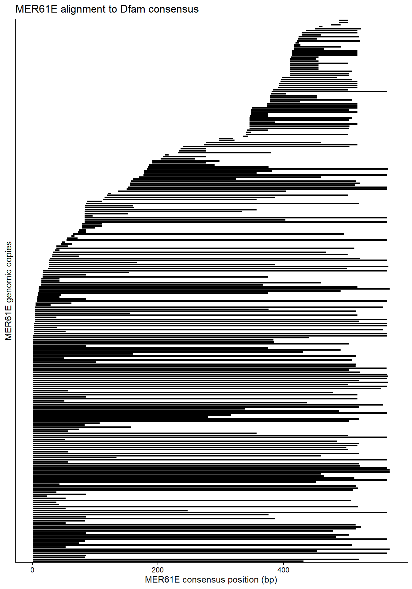
acute_names <- MER61E_rep_cluster[MER61E_rep_cluster$cluster=="Set_3",]$repID
length(acute_names)[1] 40MER61E_acute_alignments <- MER61E_alignment_summary %>%
filter(TE_name %in% acute_names)MER61E_acute_alignments %>%
arrange(consensus_start) %>%
mutate(
TE_name = factor(TE_name, levels = unique(TE_name))
) %>%
ggplot(aes(
x = consensus_start,
xend = consensus_end,
y = TE_name,
yend = TE_name
)) +
geom_segment(
color = "firebrick",
linewidth = 1.5
) +
scale_x_continuous(
limits = c(1, 569),
breaks = seq(0, 569, 50)
) +
labs(
title = "Acute MER61E alignments to Dfam consensus",
x = "MER61E consensus position (bp)",
y = "Acute MER61E copies"
) +
theme_classic()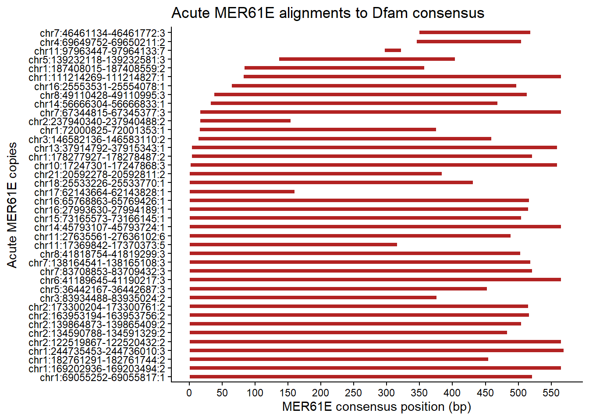
MER61E_p53_best_site_scoreGRanges object with 156 ranges and 6 metadata columns:
seqnames ranges strand | name score
<Rle> <IRanges> <Rle> | <character> <numeric>
[1] chr6 16031537-16031546 + | TP53_half_motif_pape.. 450
[2] chr7 46471407-46471416 + | TP53_half_motif_pape.. 450
[3] chr4 69649830-69649839 + | TP53_half_motif_pape.. 450
[4] chr14 83765556-83765565 + | TP53_half_motif_pape.. 450
[5] chr3 146582309-146582318 + | TP53_half_motif_pape.. 450
... ... ... ... . ... ...
[152] chr7 138223648-138223657 + | TP53_half_motif_pape.. 450
[153] chr2 173291645-173291654 + | TP53_half_motif_pape.. 450
[154] chr1 187410293-187410302 + | TP53_half_motif_pape.. 450
[155] chr2 230158672-230158681 + | TP53_half_motif_pape.. 450
[156] chr2 60227231-60227240 + | TP53_half_motif_pape.. 450
signalValue pValue qValue peak
<numeric> <numeric> <numeric> <integer>
[1] 11.2139 9.54e-07 0.00668 4
[2] 11.2139 9.54e-07 0.00668 4
[3] 11.2139 9.54e-07 0.00668 4
[4] 11.2139 9.54e-07 0.00668 4
[5] 11.2139 9.54e-07 0.00668 4
... ... ... ... ...
[152] 9.78035 8.01e-05 0.0288 4
[153] 9.78035 8.01e-05 0.0288 4
[154] 9.78035 8.01e-05 0.0288 4
[155] 9.78035 8.01e-05 0.0288 4
[156] 9.73988 8.77e-05 0.0312 4
-------
seqinfo: 22 sequences from an unspecified genome; no seqlengthshead(as.data.frame(MER61E_p53_best_site_score)) seqnames start end width strand name score
1 chr6 16031537 16031546 10 + TP53_half_motif_paper_pwm 450
2 chr7 46471407 46471416 10 + TP53_half_motif_paper_pwm 450
3 chr4 69649830 69649839 10 + TP53_half_motif_paper_pwm 450
4 chr14 83765556 83765565 10 + TP53_half_motif_paper_pwm 450
5 chr3 146582309 146582318 10 + TP53_half_motif_paper_pwm 450
6 chr2 163953567 163953576 10 + TP53_half_motif_paper_pwm 450
signalValue pValue qValue peak
1 11.2139 9.54e-07 0.00668 4
2 11.2139 9.54e-07 0.00668 4
3 11.2139 9.54e-07 0.00668 4
4 11.2139 9.54e-07 0.00668 4
5 11.2139 9.54e-07 0.00668 4
6 11.2139 9.54e-07 0.00668 4MER61E_acute_gr <- MER61E_regions[
MER61E_regions$name %in% acute_names
]
# Find overlapping p53 sites
hits <- findOverlaps(
MER61E_acute_gr,
MER61E_p53_best_site_score,
ignore.strand = TRUE
)
# Create a table of the matches
acute_p53_hits <- data.frame(
TE_name = MER61E_acute_gr$name[queryHits(hits)],
motif_start = start(MER61E_p53_best_site_score)[subjectHits(hits)],
motif_end = end(MER61E_p53_best_site_score)[subjectHits(hits)],
motif_score = MER61E_p53_best_site_score$score[subjectHits(hits)]
)
head(acute_p53_hits) TE_name motif_start motif_end motif_score
1 chr1:69055252-69055817:1 69055390 69055399 450
2 chr1:72000825-72001353:1 72000998 72001007 450
3 chr1:111214269-111214827:1 111214639 111214648 450
4 chr1:169202936-169203494:2 169203064 169203073 450
5 chr1:178277927-178278487:2 178278349 178278358 450
6 chr1:182761291-182761744:2 182761559 182761568 450nrow(acute_p53_hits)[1] 39length(unique(acute_p53_hits$TE_name))[1] 39setdiff(
acute_names,
unique(acute_p53_hits$TE_name)
)[1] "chr11:97963447-97964133:7"acute_p53_hits <- acute_p53_hits %>%
left_join(
as.data.frame(MER61E_acute_gr) %>%
dplyr::select(
TE_name = name,
TE_start = start,
TE_end = end,
TE_strand = strand
),
by = "TE_name"
) %>%
mutate(
relative_start = if_else(
TE_strand == "+",
motif_start - TE_start + 1,
TE_end - motif_end + 1
),
relative_end = if_else(
TE_strand == "+",
motif_end - TE_start + 1,
TE_end - motif_start + 1
)
)# Function to map TE-relative positions to consensus positions
make_position_map <- function(aln) {
pat <- strsplit(
as.character(pwalign::alignedPattern(aln)[[1]]),
""
)[[1]]
sub <- strsplit(
as.character(pwalign::alignedSubject(aln)[[1]]),
""
)[[1]]
# Starting positions of the local alignment
p_start <- as.integer(start(pattern(aln))[1])
s_start <- as.integer(start(subject(aln))[1])
# Count real bases, ignoring alignment gaps
p_pos <- p_start - 1L + cumsum(pat != "-")
s_pos <- s_start - 1L + cumsum(sub != "-")
data.frame(
TE_position = p_pos[pat != "-" & sub != "-"],
consensus_position = s_pos[pat != "-" & sub != "-"]
)
}p53_consensus_positions <- lapply(
seq_len(nrow(acute_p53_hits)),
function(i) {
hit <- acute_p53_hits[i, ]
aln <- MER61E_alignments[[hit$TE_name]]
position_map <- make_position_map(aln)
# Positions belonging to this p53 motif
motif_map <- position_map %>%
filter(
TE_position >= hit$relative_start,
TE_position <= hit$relative_end
)
if (nrow(motif_map) == 0) return(NULL)
data.frame(
TE_name = hit$TE_name,
p53_start = min(motif_map$consensus_position),
p53_end = max(motif_map$consensus_position),
mapped_bases = nrow(motif_map)
)
}
) %>%
bind_rows()head(p53_consensus_positions) TE_name p53_start p53_end mapped_bases
1 chr1:69055252-69055817:1 126 135 10
2 chr1:72000825-72001353:1 177 186 10
3 chr1:111214269-111214827:1 177 186 10
4 chr1:169202936-169203494:2 126 135 10
5 chr1:178277927-178278487:2 126 135 10
6 chr1:182761291-182761744:2 177 186 10nrow(p53_consensus_positions)[1] 37length(unique(p53_consensus_positions$TE_name))[1] 37MER61E_acute_plot <- MER61E_acute_alignments %>%
arrange(consensus_start) %>%
mutate(
TE_name = factor(TE_name, levels = unique(TE_name))
)
p53_consensus_positions <- p53_consensus_positions %>%
mutate(
TE_name = factor(
TE_name,
levels = levels(MER61E_acute_plot$TE_name)
)
)
ggplot() +
# MER61E alignments
geom_segment(
data = MER61E_acute_plot,
aes(
x = consensus_start,
xend = consensus_end,
y = TE_name,
yend = TE_name
),
color = "grey65",
linewidth = 2
) +
# p53 motif locations
geom_segment(
data = p53_consensus_positions,
aes(
x = p53_start,
xend = p53_end,
y = TE_name,
yend = TE_name
),
color = "firebrick",
linewidth = 3
) +
scale_x_continuous(
breaks = seq(0, 569, 50),
limits = c(1, 569)
) +
labs(
title = "p53 motifs in acute MER61E copies",
subtitle = "Aligned to the 569-bp Dfam MER61E consensus",
x = "MER61E consensus position (bp)",
y = "Acute MER61E copies"
) +
theme_classic() +
theme(
axis.text.y = element_text(size = 6),
panel.grid.major.x = element_line(
color = "grey90",
linewidth = 0.3
)
)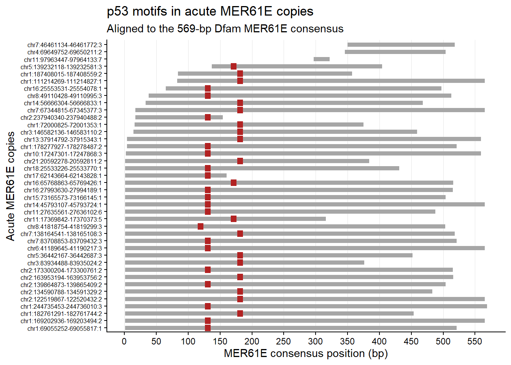
ggplot(
p53_consensus_positions,
aes(x = (p53_start + p53_end) / 2)
) +
geom_histogram(
binwidth = 10,
fill = "firebrick",
color = "white"
) +
scale_x_continuous(
limits = c(1, 569),
breaks = seq(0, 569, 50)
) +
labs(
title = "Distribution of p53 motifs in acute MER61Es",
x = "MER61E consensus position (bp)",
y = "Number of mapped p53 motifs"
) +
theme_classic()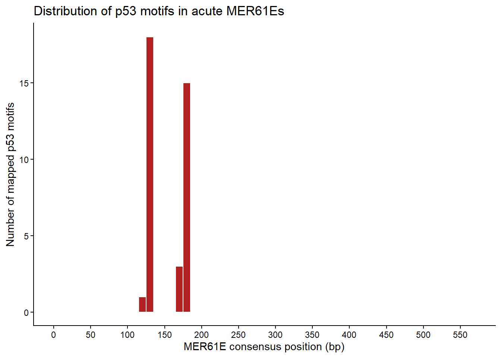
p53_consensus_positions %>%
dplyr::arrange(p53_start) %>%
dplyr::select(TE_name, p53_start, p53_end, mapped_bases) %>%
tibble::as_tibble() %>%
print(n = 40)# A tibble: 37 × 4
TE_name p53_start p53_end mapped_bases
<fct> <int> <int> <int>
1 chr8:41818754-41819299:3 115 124 10
2 chr1:69055252-69055817:1 126 135 10
3 chr1:169202936-169203494:2 126 135 10
4 chr1:178277927-178278487:2 126 135 10
5 chr1:244735453-244736010:3 126 135 10
6 chr2:139864873-139865409:2 126 135 10
7 chr2:173300204-173300761:2 126 135 10
8 chr2:237940340-237940488:2 126 135 10
9 chr6:41189645-41190217:3 126 135 10
10 chr7:83708853-83709432:3 126 135 10
11 chr8:49110428-49110995:3 126 135 10
12 chr10:17247301-17247868:3 126 135 10
13 chr11:27635561-27636102:6 126 135 10
14 chr14:45793107-45793724:1 126 135 10
15 chr15:73165573-73166145:1 126 135 10
16 chr16:25553531-25554078:1 126 135 10
17 chr16:27993630-27994189:1 126 135 10
18 chr17:62143664-62143828:1 126 135 10
19 chr18:25533226-25533770:1 126 135 10
20 chr5:139232118-139232581:3 167 176 10
21 chr11:17369842-17370373:5 167 176 10
22 chr16:65768863-65769426:1 167 176 10
23 chr1:72000825-72001353:1 177 186 10
24 chr1:111214269-111214827:1 177 186 10
25 chr1:182761291-182761744:2 177 186 10
26 chr1:187408015-187408559:2 177 186 10
27 chr2:122519867-122520432:2 177 186 10
28 chr2:134590788-134591329:2 177 186 10
29 chr2:163953194-163953756:2 177 186 10
30 chr3:83934488-83935024:2 177 186 10
31 chr3:146582136-146583110:2 177 186 10
32 chr5:36442167-36442687:3 177 186 10
33 chr7:67344815-67345377:3 177 186 10
34 chr7:138164541-138165108:3 177 186 10
35 chr13:37914792-37915343:1 177 186 10
36 chr14:56666304-56666833:1 177 186 10
37 chr21:20592278-20592811:2 177 186 10unmapped_p53 <- acute_p53_hits %>%
filter(
!TE_name %in% p53_consensus_positions$TE_name
)
unmapped_p53 %>%
dplyr::select(
TE_name,
relative_start,
relative_end,
motif_score
) TE_name relative_start relative_end motif_score
1 chr4:69649752-69650211:2 79 88 450
2 chr7:46461134-46461772:3 191 200 450unmapped_check <- unmapped_p53 %>%
rowwise() %>%
mutate(
alignment_start = as.integer(
start(pattern(MER61E_alignments[[TE_name]]))[1]
),
alignment_end = as.integer(
end(pattern(MER61E_alignments[[TE_name]]))[1]
)
) %>%
ungroup() %>%
dplyr::select(
TE_name,
relative_start,
relative_end,
alignment_start,
alignment_end
)
unmapped_check# A tibble: 2 × 5
TE_name relative_start relative_end alignment_start alignment_end
<chr> <dbl> <dbl> <int> <int>
1 chr4:69649752-69650… 79 88 277 432
2 chr7:46461134-46461… 191 200 451 618MER61E_alignment_QC <- lapply(
acute_names,
function(nm) {
aln <- MER61E_alignments[[nm]]
data.frame(
TE_name = nm,
TE_width = length(MER61E_sequences[[nm]]),
aligned_TE_bases =
end(pattern(aln)) - start(pattern(aln)) + 1,
alignment_score = score(aln),
percent_identity = pid(aln, type = "PID1")
)
}
) %>%
dplyr::bind_rows() %>%
dplyr::mutate(
fraction_aligned = aligned_TE_bases / TE_width
)
MER61E_alignment_QC %>%
dplyr::arrange(fraction_aligned) %>%
tibble::as_tibble() %>%
print(n = 40)# A tibble: 40 × 6
TE_name TE_width aligned_TE_bases alignment_score percent_identity
<chr> <int> <dbl> <dbl> <dbl>
1 chr11:97963447-97… 687 26 35.8 92.3
2 chr7:46461134-464… 639 168 90.4 82.2
3 chr4:69649752-696… 460 156 120. 85.5
4 chr3:146582136-14… 975 449 428. 87.4
5 chr1:187408015-18… 545 270 187. 84.4
6 chr5:139232118-13… 464 269 304. 89.6
7 chr11:17369842-17… 532 325 284. 86.5
8 chr1:72000825-720… 529 360 367. 87.8
9 chr3:83934488-839… 537 376 361. 87.5
10 chr21:20592278-20… 534 394 340. 85.4
11 chr18:25533226-25… 545 426 489. 89.6
12 chr16:25553531-25… 548 434 489. 89.4
13 chr14:56666304-56… 530 431 420. 87.4
14 chr1:111214269-11… 559 474 474. 87.4
15 chr5:36442167-364… 521 446 467. 88.5
16 chr8:49110428-491… 568 487 426. 85.7
17 chr2:134590788-13… 542 486 588. 90.3
18 chr8:41818754-418… 546 490 416. 85.4
19 chr11:27635561-27… 542 488 527. 89.0
20 chr15:73165573-73… 573 516 511. 87.6
21 chr16:65768863-65… 564 515 499. 87.4
22 chr2:173300204-17… 558 510 577. 89.3
23 chr16:27993630-27… 560 512 620. 90.5
24 chr2:237940340-23… 149 137 202. 94.2
25 chr2:139864873-13… 537 495 520. 88.5
26 chr2:163953194-16… 563 520 516. 87.5
27 chr7:138164541-13… 568 530 531. 87.4
28 chr1:69055252-690… 566 530 398. 84.5
29 chr1:178277927-17… 561 526 537. 88.0
30 chr7:83708853-837… 580 544 406. 84.2
31 chr17:62143664-62… 165 160 262. 95.6
32 chr7:67344815-673… 563 551 492. 86.2
33 chr13:37914792-37… 552 546 438. 85.5
34 chr10:17247301-17… 568 562 497. 85.6
35 chr1:169202936-16… 559 559 555. 87.5
36 chr1:182761291-18… 454 454 545. 90.1
37 chr1:244735453-24… 558 558 564. 87.7
38 chr2:122519867-12… 566 566 446. 85.0
39 chr6:41189645-411… 573 573 528. 86.6
40 chr14:45793107-45… 618 618 323. 79.6
# ℹ 1 more variable: fraction_aligned <dbl>test_names <- c(
"chr4:69649752-69650211:2",
"chr7:46461134-46461772:3"
)
alignment_comparison <- lapply(test_names, function(nm) {
seq <- MER61E_sequences[[nm]]
local <- pwalign::pairwiseAlignment(
pattern = seq,
subject = MER61E_ref[[1]],
type = "local"
)
global_local <- pwalign::pairwiseAlignment(
pattern = seq,
subject = MER61E_ref[[1]],
type = "global-local"
)
data.frame(
TE_name = nm,
method = c("local", "global-local"),
TE_width = length(seq),
aligned_bases = c(
end(pattern(local)) - start(pattern(local)) + 1,
end(pattern(global_local)) - start(pattern(global_local)) + 1
),
identity = c(
pid(local, type = "PID1"),
pid(global_local, type = "PID1")
)
)
}) %>%
dplyr::bind_rows() %>%
dplyr::mutate(
fraction_aligned = aligned_bases / TE_width
)
alignment_comparison TE_name method TE_width aligned_bases identity
1 chr4:69649752-69650211:2 local 460 156 85.53459
2 chr4:69649752-69650211:2 global-local 460 460 72.39915
3 chr7:46461134-46461772:3 local 639 168 82.24852
4 chr7:46461134-46461772:3 global-local 639 639 62.19512
fraction_aligned
1 0.3391304
2 1.0000000
3 0.2629108
4 1.0000000test_results <- lapply(test_names, function(nm) {
aln <- pwalign::pairwiseAlignment(
pattern = MER61E_sequences[[nm]],
subject = MER61E_ref[[1]],
type = "global-local"
)
motif <- acute_p53_hits %>%
filter(TE_name == nm)
position_map <- make_position_map(aln)
motif_map <- position_map %>%
filter(
TE_position >= motif$relative_start[1],
TE_position <= motif$relative_end[1]
)
data.frame(
TE_name = nm,
mapped_bases = nrow(motif_map),
consensus_start = if (nrow(motif_map) > 0)
min(motif_map$consensus_position) else NA_integer_,
consensus_end = if (nrow(motif_map) > 0)
max(motif_map$consensus_position) else NA_integer_
)
}) %>%
dplyr::bind_rows()
test_results TE_name mapped_bases consensus_start consensus_end
1 chr4:69649752-69650211:2 10 177 186
2 chr7:46461134-46461772:3 10 126 135Looking at p53 half motif sites
# chr4 MER61E
chr4_motif <- subseq(
MER61E_sequences[["chr4:69649752-69650211:2"]],
start = 79,
end = 88
)
chr4_consensus <- subseq(
MER61E_ref[[1]],
start = 177,
end = 186
)
# chr7 MER61E
chr7_motif <- subseq(
MER61E_sequences[["chr7:46461134-46461772:3"]],
start = 191,
end = 200
)
chr7_consensus <- subseq(
MER61E_ref[[1]],
start = 126,
end = 135
)
chr4_motif10-letter DNAString object
seq: AGACATGTCTchr4_consensus10-letter DNAString object
seq: AGACATGCCCchr7_motif10-letter DNAString object
seq: AGACATGCCTchr7_consensus10-letter DNAString object
seq: AGACATGCCCThe two motifs on each look different from each other, but the pairs match between TE copies.
p53_consensus_positions %>%
summarise(
min_position = min(p53_start),
median_position = median(p53_start),
max_position = max(p53_start)
) min_position median_position max_position
1 115 126 177p53_comparison <- bind_rows(
p53_consensus_positions %>%
transmute(
TE_name,
consensus_position = (p53_start + p53_end) / 2,
method = "Local"
),
test_results %>%
transmute(
TE_name,
consensus_position =
(consensus_start + consensus_end) / 2,
method = "Global-local"
)
)
ggplot(
p53_comparison,
aes(x = consensus_position, fill = method)
) +
geom_histogram(
binwidth = 10,
position = "identity",
alpha = 0.6
) +
scale_x_continuous(
limits = c(1, 569),
breaks = seq(0, 569, 50)
) +
labs(
title = "Predicted p53 motif positions in acute MER61Es",
x = "Dfam MER61E consensus position (bp)",
y = "Number of motifs"
) +
theme_classic()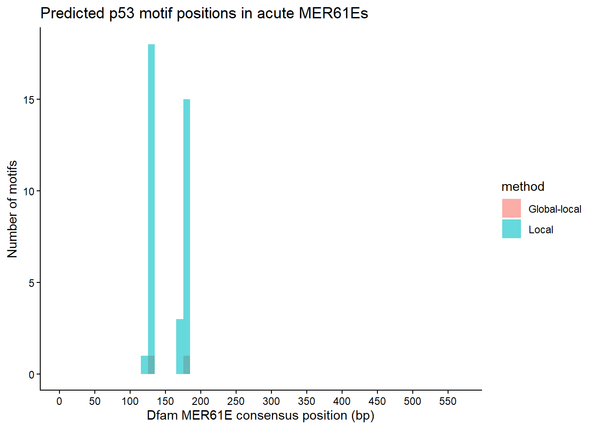
Looking at the half motif match on the consensusmatchPattern(
"AGACATGCCC",
MER61E_ref[[1]],
fixed = TRUE
)Views on a 569-letter DNAString subject
subject: TGAGAGAGGAGAAAGGAAGAAACCGGTCAGGCAG...ACTGCTACATTGTGGTGCATTGGCGAGACTAACA
views:
start end width
[1] 126 135 10 [AGACATGCCC]
[2] 177 186 10 [AGACATGCCC]two possible locations
site_126 <- subseq(
MER61E_ref[[1]],
start = 106,
end = 155
)
site_177 <- subseq(
MER61E_ref[[1]],
start = 157,
end = 206
)
site_12650-letter DNAString object
seq: TGCACAGGGGGGCTTGCCTAAGACATGCCCACAGCCGCACAGATAAGAAAsite_17750-letter DNAString object
seq: GCTACACAGGTGACTTGCCCAGACATGCCCGCAATGGAAAATTCCGTCCCnow looking around the binding halfsites on the consensus sequences to see if they are different.
Next I will see about alignment of these specific sites
repeat_alignment <- pwalign::pairwiseAlignment(
pattern = site_126,
subject = site_177,
type = "global"
)
repeat_alignmentGlobal PairwiseAlignmentsSingleSubject (1 of 1)
pattern: --TGCACAGGGGGGCTTGCCTAAGACATGCCCACAGCCGCACAGATAAGAAA
subject: GCTACACAGGTGA-CTTGCCCA-GACATGCCCGCAATGGAAAATTCCGTCCC
score: -100.6154 pid(repeat_alignment, type = "PID1")[1] 58check_flanks <- function(TE_name, motif_start, motif_end) {
te <- MER61E_sequences[[TE_name]]
flank_seq <- subseq(
te,
start = max(1, motif_start - 20),
end = min(length(te), motif_end + 20)
)
a126 <- pairwiseAlignment(
pattern = flank_seq,
subject = site_126,
type = "global"
)
a177 <- pairwiseAlignment(
pattern = flank_seq,
subject = site_177,
type = "global"
)
data.frame(
TE_name = TE_name,
identity_site126 = pid(a126, type = "PID1"),
identity_site177 = pid(a177, type = "PID1"),
score_site126 = score(a126),
score_site177 = score(a177)
)
}
bind_rows(
check_flanks(
"chr4:69649752-69650211:2",
79, 88
),
check_flanks(
"chr7:46461134-46461772:3",
191, 200
)
) TE_name identity_site126 identity_site177 score_site126
1 chr4:69649752-69650211:2 34.00000 68.00000 -160.98657
2 chr7:46461134-46461772:3 84.31373 61.53846 21.81978
score_site177
1 -61.71387
2 -86.97232Looking across the flank comparisons of all acute MER61E copies
p53_flank_comparison <- lapply(
seq_len(nrow(acute_p53_hits)),
function(i) {
hit <- acute_p53_hits[i, ]
check_flanks(
TE_name = hit$TE_name,
motif_start = hit$relative_start,
motif_end = hit$relative_end
)
}
) %>%
bind_rows() %>%
mutate(
preferred_site = case_when(
score_site126 > score_site177 ~ "126-135",
score_site177 > score_site126 ~ "177-186",
TRUE ~ "Undetermined"
),
score_difference = abs(
score_site126 - score_site177
)
)p53_flank_comparison %>%
count(preferred_site) preferred_site n
1 126-135 20
2 177-186 19Some prefered the left most site vs the right most site on the consensus sequence across all copies of MER61E.
ggplot(
p53_flank_comparison,
aes(
x = preferred_site,
fill = preferred_site
)
) +
geom_bar(width = 0.65) +
geom_text(
stat = "count",
aes(label = after_stat(count)),
vjust = -0.4
) +
scale_fill_manual(
values = c(
"126-135" = "steelblue",
"177-186" = "firebrick",
"Undetermined" = "grey60"
)
) +
labs(
title = "Predicted p53 motif locations in acute MER61Es",
subtitle = "Classification using flanking sequence similarity",
x = "Preferred MER61E consensus region",
y = "Number of acute MER61E copies"
) +
theme_classic() +
theme(legend.position = "none")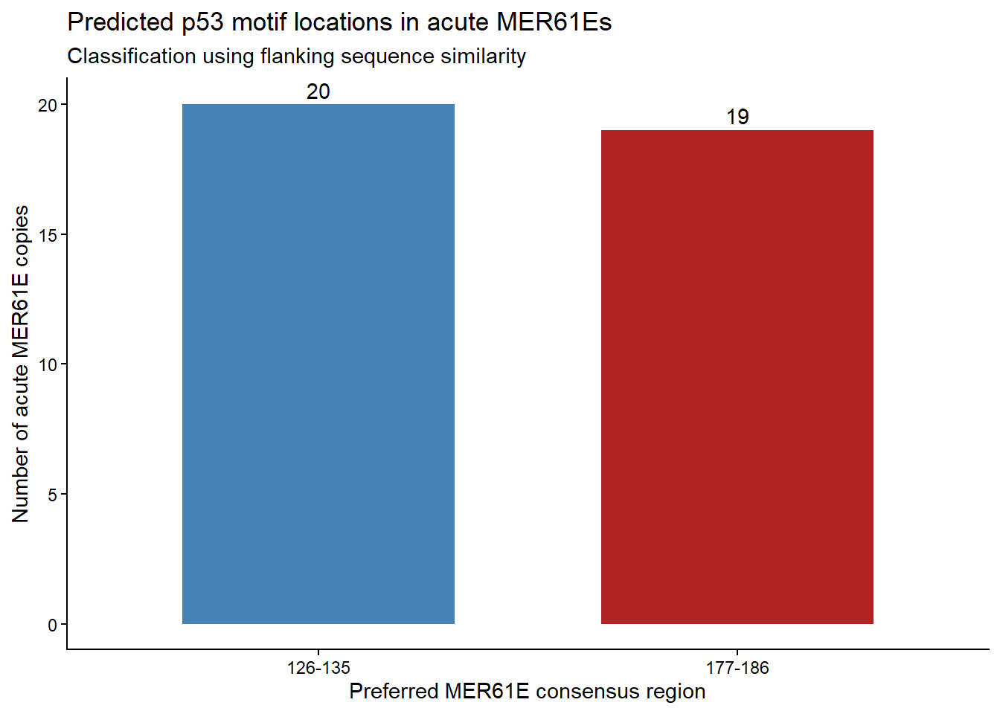
p53_flank_comparison %>%
group_by(preferred_site) %>%
summarise(
n = dplyr::n(),
median_score_difference = median(score_difference),
min_score_difference = min(score_difference),
max_score_difference = max(score_difference),
.groups = "drop"
)# A tibble: 2 × 5
preferred_site n median_score_difference min_score_difference
<chr> <int> <dbl> <dbl>
1 126-135 20 159. 90.9
2 177-186 19 152. 28.4
# ℹ 1 more variable: max_score_difference <dbl>Now I want to look at all possible half-site binding locations across MER61Es, (but first I subset to look at acute set only)
MER61E_p53_fimo <- read_tsv(
"C:/Users/renee/Other_projects_data/DXR_data/fimo_results/MER61E_ERV1_LTR_fimo/fimo.tsv", comment = "#",
show_col_types = FALSE)
MER61E_p53_fimo_gr <- makeGRangesFromDataFrame(
MER61E_p53_fimo,
seqnames.field = "sequence_name",
start.field = "start",
end.field = "stop",
strand.field = "strand",
keep.extra.columns = TRUE
)
MER61E_acute_gr <- MER61E_regions[
MER61E_regions$name %in% acute_names
]
hits <- findOverlaps(
MER61E_p53_fimo_gr,
MER61E_acute_gr,
ignore.strand = TRUE,
type = "within"
)
p53_all_hits <- tibble(
TE_name = MER61E_acute_gr$name[subjectHits(hits)],
motif_start = start(MER61E_p53_fimo_gr)[queryHits(hits)],
motif_end = end(MER61E_p53_fimo_gr)[queryHits(hits)],
motif_score = MER61E_p53_fimo_gr$score[queryHits(hits)],
matched_sequence =
MER61E_p53_fimo_gr$matched_sequence[queryHits(hits)]
)
cat("Total motif sites:", length(hits), "\n")Total motif sites: 88 cat(
"Acute MER61Es with motifs:",
length(unique(subjectHits(hits))),
"of 40\n"
)Acute MER61Es with motifs: 39 of 40hits_test <- findOverlaps(
MER61E_p53_fimo_gr,
MER61E_acute_gr,
ignore.strand = TRUE
)
length(hits_test)[1] 88test_motif <- GRanges(
"chr4",
IRanges(start = 69649829, end = 69649838)
)
# The known MER61E
test_TE <- GRanges(
"chr4",
IRanges(start = 69649752, end = 69650211)
)
findOverlaps(
test_motif,
test_TE,
ignore.strand = TRUE,
type = "within"
)Hits object with 1 hit and 0 metadata columns:
queryHits subjectHits
<integer> <integer>
[1] 1 1
-------
queryLength: 1 / subjectLength: 1fimo_chr4 <- MER61E_p53_fimo_gr[
seqnames(MER61E_p53_fimo_gr) == "chr4" &
start(MER61E_p53_fimo_gr) == 69649829
]
# Extract the chr4 acute MER61E
acute_chr4 <- MER61E_acute_gr[
seqnames(MER61E_acute_gr) == "chr4" &
start(MER61E_acute_gr) == 69649752
]
fimo_chr4GRanges object with 1 range and 6 metadata columns:
seqnames ranges strand | motif_id motif_alt_id
<Rle> <IRanges> <Rle> | <character> <logical>
[1] chr4 69649829-69649838 + | TP53_half_motif_pape.. <NA>
score p-value q-value matched_sequence
<numeric> <numeric> <numeric> <character>
[1] 11.2139 9.54e-07 0.00668 agacatgtct
-------
seqinfo: 22 sequences from an unspecified genome; no seqlengthsacute_chr4GRanges object with 1 range and 2 metadata columns:
seqnames ranges strand | name score
<Rle> <IRanges> <Rle> | <character> <numeric>
[1] chr4 69649752-69650211 + | chr4:69649752-696502.. 0
-------
seqinfo: 22 sequences from an unspecified genome; no seqlengthsfindOverlaps(
fimo_chr4,
acute_chr4,
ignore.strand = TRUE,
type = "within"
)Hits object with 1 hit and 0 metadata columns:
queryHits subjectHits
<integer> <integer>
[1] 1 1
-------
queryLength: 1 / subjectLength: 1The code below is the number of motifs by MER61E acute copies.
###how many motifs each acute MER61E contains
p53_site_counts <- tibble(
TE_name = unique(acute_names)
) %>%
left_join(
p53_all_hits %>%
count(TE_name, name = "n_sites"),
by = "TE_name"
) %>%
mutate(n_sites = coalesce(n_sites, 0L))
p53_site_counts %>%
count(n_sites)# A tibble: 5 × 2
n_sites n
<int> <int>
1 0 1
2 1 6
3 2 20
4 3 10
5 4 3p53_site_counts %>%
summarise(
total_TEs = dplyr::n(),
TEs_with_motifs = sum(n_sites > 0),
TEs_with_multiple = sum(n_sites > 1),
total_motifs = sum(n_sites),
max_motifs = max(n_sites)
)# A tibble: 1 × 5
total_TEs TEs_with_motifs TEs_with_multiple total_motifs max_motifs
<int> <int> <int> <int> <int>
1 40 39 33 88 4p53_all_hits <- p53_all_hits %>%
left_join(
as.data.frame(MER61E_acute_gr) %>%
transmute(
TE_name = name,
TE_start = start,
TE_end = end,
TE_strand = as.character(strand)
),
by = "TE_name"
) %>%
mutate(
relative_start = if_else(
TE_strand == "+",
motif_start - TE_start + 1,
TE_end - motif_end + 1
),
relative_end = if_else(
TE_strand == "+",
motif_end - TE_start + 1,
TE_end - motif_start + 1
)
)p53_all_hits %>%
dplyr::select(
TE_name,
TE_strand,
relative_start,
relative_end,
motif_score
) %>%
head(10)# A tibble: 10 × 5
TE_name TE_strand relative_start relative_end motif_score
<chr> <chr> <dbl> <dbl> <dbl>
1 chr4:69649752-69650211:2 + 78 87 11.2
2 chr3:146582136-146583110:2 + 173 182 11.2
3 chr2:163953194-163953756:2 - 182 191 11.2
4 chr16:25553531-25554078:1 - 117 126 11.2
5 chr1:72000825-72001353:1 + 173 182 11.2
6 chr15:73165573-73166145:1 - 137 146 11.2
7 chr2:139864873-139865409:2 + 124 133 11.2
8 chr10:17247301-17247868:3 + 136 145 11.0
9 chr10:17247301-17247868:3 + 187 196 11.0
10 chr7:46461134-46461772:3 - 192 201 11.0p53_all_hits %>%
mutate(
TE_width = TE_end - TE_start + 1
) %>%
summarise(
invalid_positions = sum(
relative_start < 1 |
relative_end > TE_width |
relative_start > relative_end
)
)# A tibble: 1 × 1
invalid_positions
<int>
1 0### mapping hits of all halfsites
# p53_all_hits <- p53_all_hits %>%
# left_join(
# as.data.frame(MER61E_acute_gr) %>%
# transmute(
# TE_name = name,
# TE_start = start,
# TE_end = end,
# TE_strand = as.character(strand)
# ),
# by = "TE_name"
# ) %>%
# mutate(
# relative_start = if_else(
# TE_strand == "+",
# motif_start - TE_start + 1,
# TE_end - motif_end + 1
# ),
# relative_end = if_else(
# TE_strand == "+",
# motif_end - TE_start + 1,
# TE_end - motif_start + 1
# )
# )
#
p53_all_hits %>%
summarise(
total_sites = dplyr::n(),
unique_TEs = n_distinct(TE_name),
invalid_positions = sum(
relative_start < 1 |
relative_end > (TE_end - TE_start + 1) |
relative_start > relative_end,
na.rm = TRUE
),
missing_positions = sum(
is.na(relative_start) | is.na(relative_end)
)
)# A tibble: 1 × 4
total_sites unique_TEs invalid_positions missing_positions
<int> <int> <int> <int>
1 88 39 0 0make_position_map <- function(aln) {
pat <- strsplit(as.character(alignedPattern(aln)), "")[[1]]
sub <- strsplit(as.character(alignedSubject(aln)), "")[[1]]
p_start <- as.integer(start(pattern(aln))[1])
s_start <- as.integer(start(subject(aln))[1])
p_pos <- p_start - 1L + cumsum(pat != "-")
s_pos <- s_start - 1L + cumsum(sub != "-")
data.frame(
TE_position = p_pos[pat != "-" & sub != "-"],
consensus_position = s_pos[pat != "-" & sub != "-"]
)
}. realigning MER61E-acute copies via global-local conditions
MER61E_alignments_glocal <- lapply(
acute_names,
function(nm) {
pairwiseAlignment(
pattern = MER61E_sequences[[nm]],
subject = MER61E_ref[[1]],
type = "global-local"
)
}
)
names(MER61E_alignments_glocal) <- acute_namesmap_one_motif <- function(TE_name, rel_start, rel_end, motif_score = NA, matched_sequence = NA) {
# ----- try local first -----
aln_local <- MER61E_alignments[[TE_name]]
map_local <- make_position_map(aln_local)
motif_local <- map_local %>%
filter(TE_position >= rel_start, TE_position <= rel_end)
if (nrow(motif_local) == (rel_end - rel_start + 1)) {
return(data.frame(
TE_name = TE_name,
relative_start = rel_start,
relative_end = rel_end,
consensus_start = min(motif_local$consensus_position),
consensus_end = max(motif_local$consensus_position),
mapped_bases = nrow(motif_local),
method = "local",
motif_score = motif_score,
matched_sequence = matched_sequence
))
}
# ----- fallback to global-local -----
aln_glocal <- MER61E_alignments_glocal[[TE_name]]
map_glocal <- make_position_map(aln_glocal)
motif_glocal <- map_glocal %>%
filter(TE_position >= rel_start, TE_position <= rel_end)
if (nrow(motif_glocal) > 0) {
return(data.frame(
TE_name = TE_name,
relative_start = rel_start,
relative_end = rel_end,
consensus_start = min(motif_glocal$consensus_position),
consensus_end = max(motif_glocal$consensus_position),
mapped_bases = nrow(motif_glocal),
method = "global-local",
motif_score = motif_score,
matched_sequence = matched_sequence
))
}
# ----- completely unmapped -----
data.frame(
TE_name = TE_name,
relative_start = rel_start,
relative_end = rel_end,
consensus_start = NA,
consensus_end = NA,
mapped_bases = 0,
method = "unmapped",
motif_score = motif_score,
matched_sequence = matched_sequence
)
}p53_mapped_all <- lapply(
seq_len(nrow(p53_all_hits)),
function(i) {
map_one_motif(
TE_name = p53_all_hits$TE_name[i],
rel_start = p53_all_hits$relative_start[i],
rel_end = p53_all_hits$relative_end[i],
motif_score = p53_all_hits$motif_score[i],
matched_sequence = p53_all_hits$matched_sequence[i]
)
}
) %>%
bind_rows()
p53_mapped_all %>%
count(method) method n
1 global-local 6
2 local 81
3 unmapped 1p53_mapped_all %>%
summarise(
total_sites = dplyr::n(),
fully_mapped = sum(mapped_bases == (relative_end - relative_start + 1), na.rm = TRUE),
unmapped = sum(method == "unmapped")
) total_sites fully_mapped unmapped
1 88 85 1p53_mapped_all <- p53_mapped_all %>%
mutate(
motif_midpoint = (consensus_start + consensus_end) / 2,
consensus_site = case_when(
!is.na(consensus_start) & consensus_start >= 126 & consensus_end <= 135 ~ "126-135",
!is.na(consensus_start) & consensus_start >= 177 & consensus_end <= 186 ~ "177-186",
is.na(consensus_start) ~ "unmapped",
TRUE ~ "other"
)
)
p53_mapped_all %>%
count(consensus_site) consensus_site n
1 177-186 1
2 other 86
3 unmapped 1p53_mapped_all %>%
distinct(TE_name, consensus_site) %>%
count(consensus_site) consensus_site n
1 177-186 1
2 other 39
3 unmapped 1### looking at the partial mapped motifs:
p53_mapped_all %>%
mutate(
motif_width = relative_end - relative_start + 1,
fraction_mapped = mapped_bases / motif_width
) %>%
filter(fraction_mapped < 1) %>%
dplyr::select(
TE_name,
relative_start,
relative_end,
consensus_start,
consensus_end,
mapped_bases,
motif_width,
fraction_mapped,
method
) TE_name relative_start relative_end consensus_start
1 chr16:25553531-25554078:1 168 177 178
2 chr5:139232118-139232581:3 168 177 NA
3 chr7:46461134-46461772:3 150 159 86
consensus_end mapped_bases motif_width fraction_mapped method
1 186 9 10 0.9 global-local
2 NA 0 10 0.0 unmapped
3 93 8 10 0.8 global-localp53_mapped_all %>%
filter(consensus_site == "other") %>%
arrange(consensus_start) %>%
dplyr::select(
TE_name,
consensus_start,
consensus_end,
mapped_bases,
method
) %>%
tibble::as_tibble() %>%
print(n = Inf)# A tibble: 86 × 5
TE_name consensus_start consensus_end mapped_bases method
<chr> <int> <int> <dbl> <chr>
1 chr7:46461134-46461772:3 86 93 8 global…
2 chr1:244735453-244736010:3 114 123 10 local
3 chr11:17369842-17370373:5 114 123 10 local
4 chr18:25533226-25533770:1 114 123 10 local
5 chr16:27993630-27994189:1 114 123 10 local
6 chr8:41818754-41819299:3 114 123 10 local
7 chr8:49110428-49110995:3 114 123 10 local
8 chr17:62143664-62143828:1 114 123 10 local
9 chr7:67344815-67345377:3 114 123 10 local
10 chr4:69649752-69650211:2 114 123 10 global…
11 chr3:146582136-146583110:2 114 123 10 local
12 chr7:83708853-83709432:3 114 123 10 local
13 chr1:187408015-187408559:2 115 125 10 local
14 chr11:27635561-27636102:6 116 125 10 local
15 chr1:182761291-182761744:2 116 125 10 local
16 chr2:163953194-163953756:2 116 125 10 local
17 chr21:20592278-20592811:2 116 125 10 local
18 chr16:25553531-25554078:1 116 125 10 local
19 chr6:41189645-41190217:3 116 125 10 local
20 chr7:46461134-46461772:3 116 125 10 global…
21 chr1:111214269-111214827:1 116 125 10 local
22 chr2:173300204-173300761:2 116 125 10 local
23 chr2:237940340-237940488:2 116 125 10 local
24 chr2:139864873-139865409:2 125 134 10 local
25 chr10:17247301-17247868:3 125 134 10 local
26 chr1:69055252-69055817:1 125 134 10 local
27 chr18:25533226-25533770:1 125 134 10 local
28 chr16:27993630-27994189:1 125 134 10 local
29 chr8:49110428-49110995:3 125 134 10 local
30 chr17:62143664-62143828:1 125 134 10 local
31 chr1:72000825-72001353:1 125 134 10 local
32 chr7:83708853-83709432:3 125 134 10 local
33 chr2:134590788-134591329:2 125 134 10 local
34 chr1:169202936-169203494:2 125 134 10 local
35 chr1:244735453-244736010:3 125 134 10 local
36 chr14:45793107-45793724:1 125 134 10 local
37 chr11:17369842-17370373:5 125 134 10 local
38 chr14:56666304-56666833:1 125 134 10 local
39 chr16:25553531-25554078:1 127 136 10 local
40 chr15:73165573-73166145:1 127 136 10 local
41 chr7:46461134-46461772:3 127 136 10 global…
42 chr21:20592278-20592811:2 127 136 10 local
43 chr11:27635561-27636102:6 127 136 10 local
44 chr5:36442167-36442687:3 127 136 10 local
45 chr6:41189645-41190217:3 127 136 10 local
46 chr1:111214269-111214827:1 127 136 10 local
47 chr7:138164541-138165108:3 127 136 10 local
48 chr2:173300204-173300761:2 127 136 10 local
49 chr2:237940340-237940488:2 127 136 10 local
50 chr1:178277927-178278487:2 127 136 10 local
51 chr1:182761291-182761744:2 127 136 10 local
52 chr11:17369842-17370373:5 166 175 10 local
53 chr16:65768863-65769426:1 168 177 10 local
54 chr5:139232118-139232581:3 168 177 10 local
55 chr1:187408015-187408559:2 168 177 10 local
56 chr1:182761291-182761744:2 168 177 10 local
57 chr4:69649752-69650211:2 176 185 10 global…
58 chr3:146582136-146583110:2 176 185 10 local
59 chr1:72000825-72001353:1 176 185 10 local
60 chr10:17247301-17247868:3 176 185 10 local
61 chr2:134590788-134591329:2 176 185 10 local
62 chr18:25533226-25533770:1 176 185 10 local
63 chr8:49110428-49110995:3 176 185 10 local
64 chr14:56666304-56666833:1 176 185 10 local
65 chr7:67344815-67345377:3 176 185 10 local
66 chr1:69055252-69055817:1 176 185 10 local
67 chr3:83934488-83935024:2 176 185 10 local
68 chr2:122519867-122520432:2 176 185 10 local
69 chr2:139864873-139865409:2 176 185 10 local
70 chr1:244735453-244736010:3 176 185 10 local
71 chr11:17369842-17370373:5 176 185 10 local
72 chr7:83708853-83709432:3 176 185 10 local
73 chr8:41818754-41819299:3 176 185 10 local
74 chr2:163953194-163953756:2 178 187 10 local
75 chr21:20592278-20592811:2 178 187 10 local
76 chr5:36442167-36442687:3 178 187 10 local
77 chr13:37914792-37915343:1 178 187 10 local
78 chr15:73165573-73166145:1 178 187 10 local
79 chr1:111214269-111214827:1 178 187 10 local
80 chr7:138164541-138165108:3 178 187 10 local
81 chr1:182761291-182761744:2 178 187 10 local
82 chr1:187408015-187408559:2 178 187 10 local
83 chr6:41189645-41190217:3 178 187 10 local
84 chr11:27635561-27636102:6 178 187 10 local
85 chr16:65768863-65769426:1 178 187 10 local
86 chr11:27635561-27636102:6 303 312 10 local ggplot(
p53_mapped_all %>%
filter(!is.na(consensus_start)),
aes(x = (consensus_start + consensus_end) / 2)
) +
geom_histogram(
binwidth = 10,
fill = "firebrick",
color = "white"
) +
geom_vline(
xintercept = c(130.5, 181.5),
color = "steelblue",
linetype = "dashed"
) +
scale_x_continuous(
breaks = seq(0, 569, 25)
) +
labs(
title = "All p53 motif positions in acute MER61Es",
x = "Dfam MER61E consensus position (bp)",
y = "Number of motifs"
) +
theme_classic()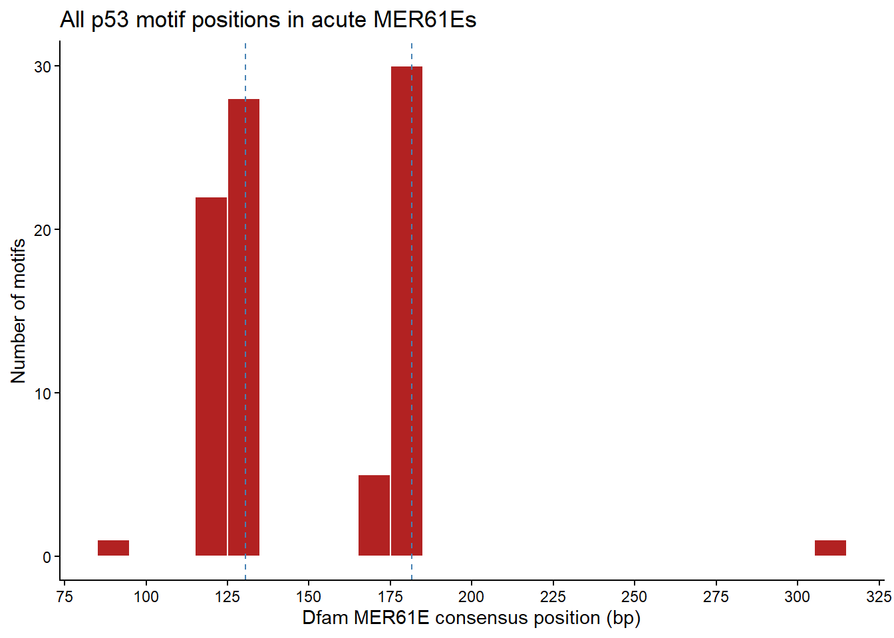
p53_mapped_all <- p53_mapped_all %>%
mutate(
consensus_site = case_when(
is.na(consensus_start) ~ "unmapped",
consensus_start <= 135 &
consensus_end >= 126 ~ "126-135",
consensus_start <= 186 &
consensus_end >= 177 ~ "177-186",
TRUE ~ "other"
)
)
p53_mapped_all %>%
count(consensus_site) consensus_site n
1 126-135 28
2 177-186 34
3 other 25
4 unmapped 1TE_p53_summary <- p53_mapped_all %>%
group_by(TE_name) %>%
summarise(
has_126 = any(consensus_site == "126-135"),
has_177 = any(consensus_site == "177-186"),
has_other = any(consensus_site == "other"),
has_unmapped = any(consensus_site == "unmapped"),
.groups = "drop"
) %>%
right_join(
tibble(TE_name = unique(acute_names)),
by = "TE_name"
) %>%
mutate(
across(starts_with("has_"), ~ replace_na(.x, FALSE)),
motif_configuration = case_when(
has_126 & has_177 ~ "Both",
has_126 ~ "126 only",
has_177 ~ "177 only",
has_other ~ "Other only",
has_unmapped ~ "Unmapped only",
TRUE ~ "No motif"
)
)
TE_p53_summary %>%
count(motif_configuration)# A tibble: 4 × 2
motif_configuration n
<chr> <int>
1 126 only 8
2 177 only 11
3 Both 20
4 No motif 1nonacute_names <- setdiff(
names(MER61E_sequences),
unique(acute_names)
)
length(nonacute_names)[1] 227MER61E_nonacute_gr <- MER61E_regions[
MER61E_regions$name %in% nonacute_names
]
nonacute_hits <- findOverlaps(
MER61E_p53_fimo_gr,
MER61E_nonacute_gr,
ignore.strand = TRUE,
type = "within"
)
length(nonacute_hits)[1] 197p53_nonacute_hits <- tibble(
TE_name = MER61E_nonacute_gr$name[subjectHits(nonacute_hits)],
TE_start = start(MER61E_nonacute_gr)[subjectHits(nonacute_hits)],
TE_end = end(MER61E_nonacute_gr)[subjectHits(nonacute_hits)],
TE_strand = as.character(
strand(MER61E_nonacute_gr)[subjectHits(nonacute_hits)]
),
motif_start = start(MER61E_p53_fimo_gr)[queryHits(nonacute_hits)],
motif_end = end(MER61E_p53_fimo_gr)[queryHits(nonacute_hits)],
motif_score = MER61E_p53_fimo_gr$score[queryHits(nonacute_hits)],
matched_sequence =
MER61E_p53_fimo_gr$matched_sequence[queryHits(nonacute_hits)]
) %>%
mutate(
relative_start = if_else(
TE_strand == "+",
motif_start - TE_start + 1L,
TE_end - motif_end + 1L
),
relative_end = if_else(
TE_strand == "+",
motif_end - TE_start + 1L,
TE_end - motif_start + 1L
)
)
p53_nonacute_hits %>%
summarise(
total_sites = dplyr::n(),
unique_TEs = n_distinct(TE_name),
invalid_positions = sum(
relative_start < 1 |
relative_end > (TE_end - TE_start + 1) |
relative_start > relative_end
)
)# A tibble: 1 × 3
total_sites unique_TEs invalid_positions
<int> <int> <int>
1 197 117 0nonacute_glocal <- lapply(
nonacute_names,
function(nm) {
pwalign::pairwiseAlignment(
pattern = MER61E_sequences[[nm]],
subject = MER61E_ref[[1]],
type = "global-local"
)
}
)
names(nonacute_glocal) <- nonacute_names
MER61E_alignments_glocal <- c(
MER61E_alignments_glocal,
nonacute_glocal
)length(MER61E_alignments_glocal)[1] 267p53_nonacute_mapped <- lapply(
seq_len(nrow(p53_nonacute_hits)),
function(i) {
map_one_motif(
TE_name = p53_nonacute_hits$TE_name[i],
rel_start = p53_nonacute_hits$relative_start[i],
rel_end = p53_nonacute_hits$relative_end[i],
motif_score = p53_nonacute_hits$motif_score[i],
matched_sequence = p53_nonacute_hits$matched_sequence[i]
)
}
) %>%
dplyr::bind_rows()p53_nonacute_mapped <- p53_nonacute_mapped %>%
mutate(
consensus_site = case_when(
is.na(consensus_start) ~ "unmapped",
consensus_start <= 135 &
consensus_end >= 126 ~ "126-135",
consensus_start <= 186 &
consensus_end >= 177 ~ "177-186",
TRUE ~ "other"
)
)
p53_nonacute_mapped %>%
count(consensus_site) consensus_site n
1 126-135 63
2 177-186 71
3 other 62
4 unmapped 1TE_nonacute_summary <- p53_nonacute_mapped %>%
group_by(TE_name) %>%
summarise(
has_126 = any(consensus_site == "126-135"),
has_177 = any(consensus_site == "177-186"),
has_other = any(consensus_site == "other"),
has_unmapped = any(consensus_site == "unmapped"),
.groups = "drop"
) %>%
right_join(
tibble(TE_name = nonacute_names),
by = "TE_name"
) %>%
mutate(
across(
starts_with("has_"),
~ tidyr::replace_na(.x, FALSE)
),
motif_configuration = case_when(
has_126 & has_177 ~ "Both",
has_126 ~ "126 only",
has_177 ~ "177 only",
has_other ~ "Other only",
has_unmapped ~ "Unmapped only",
TRUE ~ "No motif"
)
)MER61E_p53_comparison <- bind_rows(
TE_p53_summary %>%
dplyr::select(TE_name, motif_configuration) %>%
mutate(Response = "Acute"),
TE_nonacute_summary %>%
dplyr::select(TE_name, motif_configuration) %>%
mutate(Response = "Non-acute")
) %>%
mutate(
Response = factor(
Response,
levels = c("Acute", "Non-acute")
),
motif_configuration = factor(
motif_configuration,
levels = c(
"126 only",
"177 only",
"Both",
"Other only",
"Unmapped only",
"No motif"
)
)
)
ggplot(
MER61E_p53_comparison,
aes(x = Response, fill = motif_configuration)
) +
geom_bar(
position = "fill",
color = "white",
linewidth = 0.3
) +
scale_y_continuous(
labels = scales::percent
) +
labs(
title = "p53 motif architecture in MER61E copies",
subtitle = "Acute versus non-acute H3K27ac response",
x = NULL,
y = "Proportion of MER61E copies",
fill = "p53 motif configuration"
) +
theme_classic()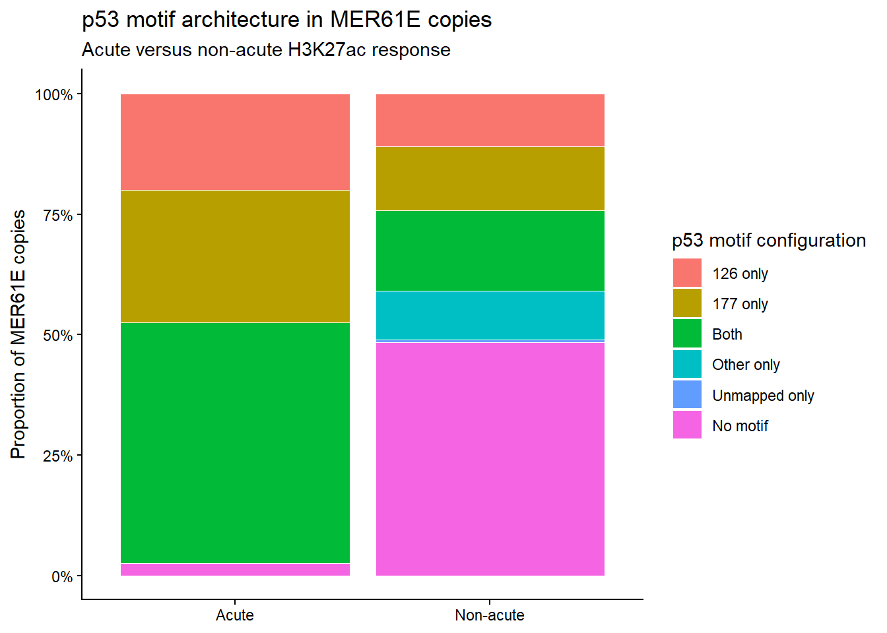
MER61E_motif_counts <- bind_rows(
tibble(
TE_name = unique(acute_names),
Response = "Acute"
),
tibble(
TE_name = nonacute_names,
Response = "Non-acute"
)
) %>%
left_join(
bind_rows(
p53_all_hits %>%
dplyr::select(TE_name),
p53_nonacute_hits %>%
dplyr::select(TE_name)
) %>%
count(TE_name, name = "n_motifs"),
by = "TE_name"
) %>%
mutate(
n_motifs = coalesce(n_motifs, 0L)
)
MER61E_motif_counts %>%
group_by(Response) %>%
summarise(
n_TEs = dplyr::n(),
median_motifs = median(n_motifs),
mean_motifs = mean(n_motifs),
percent_with_motif = 100 * mean(n_motifs > 0),
percent_multiple = 100 * mean(n_motifs >= 2),
.groups = "drop"
)# A tibble: 2 × 6
Response n_TEs median_motifs mean_motifs percent_with_motif percent_multiple
<chr> <int> <dbl> <dbl> <dbl> <dbl>
1 Acute 40 2 2.2 97.5 82.5
2 Non-acute 227 1 0.868 51.5 26.0MER61E_p53_comparison <- bind_rows(
TE_p53_summary %>%
mutate(Response = "Acute"),
TE_nonacute_summary %>%
mutate(Response = "Non-acute")
)
# Test 1: Both regions vs everything else
both_table <- MER61E_p53_comparison %>%
mutate(Has_both = motif_configuration == "Both") %>%
with(table(Response, Has_both))
fisher.test(both_table)
Fisher's Exact Test for Count Data
data: both_table
p-value = 1.42e-05
alternative hypothesis: true odds ratio is not equal to 1
95 percent confidence interval:
0.09318298 0.43813904
sample estimates:
odds ratio
0.2026683 # Test 2: Any predicted p53 motif
any_table <- MER61E_p53_comparison %>%
mutate(Has_motif = motif_configuration != "No motif") %>%
with(table(Response, Has_motif))
fisher.test(any_table)
Fisher's Exact Test for Count Data
data: any_table
p-value = 2.877e-09
alternative hypothesis: true odds ratio is not equal to 1
95 percent confidence interval:
0.0006723089 0.1683803620
sample estimates:
odds ratio
0.02748296 # Test 3: Both regions among motif-positive copies
motif_positive_table <- MER61E_p53_comparison %>%
filter(motif_configuration != "No motif") %>%
mutate(Has_both = motif_configuration == "Both") %>%
with(table(Response, Has_both))
fisher.test(motif_positive_table)
Fisher's Exact Test for Count Data
data: motif_positive_table
p-value = 0.05476
alternative hypothesis: true odds ratio is not equal to 1
95 percent confidence interval:
0.2047557 1.0233240
sample estimates:
odds ratio
0.4593934 cluster_info <- MER61E_rep_cluster %>%
transmute(
TE_name = repID,
cluster = as.character(cluster)
) %>%
distinct()
# Check for conflicting classifications
cluster_info %>%
count(TE_name) %>%
filter(n > 1)# A tibble: 0 × 2
# ℹ 2 variables: TE_name <chr>, n <int>MER61E_cluster_info <- tibble(
TE_name = names(MER61E_sequences)
) %>%
left_join(cluster_info, by = "TE_name") %>%
mutate(
cluster = coalesce(cluster, "NA")
)
MER61E_cluster_info %>%
count(cluster)# A tibble: 4 × 2
cluster n
<chr> <int>
1 NA 200
2 Set_1 11
3 Set_3 40
4 not_assigned 16stopifnot(
nrow(MER61E_cluster_info) == 267,
n_distinct(MER61E_cluster_info$TE_name) == 267
)verified NA, not-assigned, Set_1 and Set_3
# MER61E_alignments_all <- lapply(
# names(MER61E_sequences),
# function(nm) {
#
# pwalign::pairwiseAlignment(
# pattern = MER61E_sequences[[nm]],
# subject = MER61E_ref[[1]],
# type = "global-local"
# )
# }
# )
#
# names(MER61E_alignments_all) <- names(MER61E_sequences)
MER61E_alignments_all <- readRDS("data/RDS_files/MER61E_alignments_all.RDS")
# saveRDS(MER61E_alignments_all,"data/RDS_files/MER61E_alignments_all.RDS")MER61E_alignment_all_df <- lapply(
names(MER61E_alignments_all),
function(nm) {
aln <- MER61E_alignments_all[[nm]]
tibble(
TE_name = nm,
consensus_start = as.integer(start(subject(aln))[1]),
consensus_end = as.integer(end(subject(aln))[1]),
percent_identity = as.numeric(
pwalign::pid(aln, type = "PID1")
),
alignment_score = as.numeric(
pwalign::score(aln)
)
)
}
) %>%
bind_rows() %>%
left_join(
MER61E_cluster_info,
by = "TE_name"
)
MER61E_alignment_all_df %>%
count(cluster)# A tibble: 4 × 2
cluster n
<chr> <int>
1 NA 200
2 Set_1 11
3 Set_3 40
4 not_assigned 16hits_all <- findOverlaps(
MER61E_p53_fimo_gr,
MER61E_regions,
ignore.strand = TRUE,
type = "within"
)
p53_hits_all <- tibble(
TE_name = MER61E_regions$name[subjectHits(hits_all)],
TE_start = start(MER61E_regions)[subjectHits(hits_all)],
TE_end = end(MER61E_regions)[subjectHits(hits_all)],
TE_strand = as.character(
strand(MER61E_regions)[subjectHits(hits_all)]
),
motif_start = start(MER61E_p53_fimo_gr)[queryHits(hits_all)],
motif_end = end(MER61E_p53_fimo_gr)[queryHits(hits_all)],
motif_score = MER61E_p53_fimo_gr$score[queryHits(hits_all)],
matched_sequence =
MER61E_p53_fimo_gr$matched_sequence[queryHits(hits_all)]
) %>%
mutate(
relative_start = if_else(
TE_strand == "+",
motif_start - TE_start + 1L,
TE_end - motif_end + 1L
),
relative_end = if_else(
TE_strand == "+",
motif_end - TE_start + 1L,
TE_end - motif_start + 1L
)
)
p53_hits_all %>%
summarise(
total_sites = dplyr::n(),
TEs_with_motifs = n_distinct(TE_name),
invalid_positions = sum(
relative_start < 1 |
relative_end > (TE_end - TE_start + 1) |
relative_start > relative_end
)
)# A tibble: 1 × 3
total_sites TEs_with_motifs invalid_positions
<int> <int> <int>
1 285 156 0make_position_map <- function(aln) {
pat <- strsplit(
as.character(pwalign::alignedPattern(aln)[[1]]),
""
)[[1]]
sub <- strsplit(
as.character(pwalign::alignedSubject(aln)[[1]]),
""
)[[1]]
p_start <- as.integer(start(pattern(aln))[1])
s_start <- as.integer(start(subject(aln))[1])
p_pos <- p_start - 1L + cumsum(pat != "-")
s_pos <- s_start - 1L + cumsum(sub != "-")
tibble(
TE_position = p_pos[pat != "-" & sub != "-"],
consensus_position = s_pos[pat != "-" & sub != "-"]
)
}MER61E_position_maps <- lapply(
MER61E_alignments_all,
make_position_map
)Mapping all FIMO motifs
p53_mapped_all_TEs <- lapply(
seq_len(nrow(p53_hits_all)),
function(i) {
hit <- p53_hits_all[i, ]
position_map <- MER61E_position_maps[[hit$TE_name]]
motif_map <- position_map %>%
filter(
TE_position >= hit$relative_start,
TE_position <= hit$relative_end
)
tibble(
TE_name = hit$TE_name,
motif_start = hit$motif_start,
motif_end = hit$motif_end,
motif_score = hit$motif_score,
matched_sequence = hit$matched_sequence,
consensus_start = if (nrow(motif_map) > 0)
min(motif_map$consensus_position) else NA_integer_,
consensus_end = if (nrow(motif_map) > 0)
max(motif_map$consensus_position) else NA_integer_,
mapped_bases = nrow(motif_map),
motif_width = hit$relative_end - hit$relative_start + 1
)
}
) %>%
bind_rows() %>%
mutate(
mapping_status = case_when(
mapped_bases == motif_width ~ "Fully mapped",
mapped_bases > 0 ~ "Partially mapped",
TRUE ~ "Unmapped"
)
) %>%
left_join(
MER61E_cluster_info,
by = "TE_name"
)
p53_mapped_all_TEs %>%
count(cluster, mapping_status)# A tibble: 10 × 3
cluster mapping_status n
<chr> <chr> <int>
1 NA Fully mapped 141
2 NA Partially mapped 5
3 NA Unmapped 1
4 Set_1 Fully mapped 12
5 Set_1 Partially mapped 2
6 Set_3 Fully mapped 85
7 Set_3 Partially mapped 2
8 Set_3 Unmapped 1
9 not_assigned Fully mapped 35
10 not_assigned Partially mapped 1cluster_levels <- c(
"Set_3",
"Set_2",
"Set_1",
"not_assigned",
"NA"
)
MER61E_alignment_all_df <- MER61E_alignment_all_df %>%
mutate(
cluster = factor(cluster, levels = cluster_levels)
) %>%
arrange(cluster, consensus_start, consensus_end) %>%
mutate(
TE_name = factor(TE_name, levels = rev(unique(TE_name)))
)
p53_mapped_all_TEs <- p53_mapped_all_TEs %>%
mutate(
cluster = factor(cluster, levels = cluster_levels),
TE_name = factor(
TE_name,
levels = levels(MER61E_alignment_all_df$TE_name)
)
)MER61E_consensus_plot <- ggplot() +
# MER61E aligned regions, colored by H3K27ac cluster
geom_segment(
data = MER61E_alignment_all_df,
aes(
x = consensus_start,
xend = consensus_end,
y = TE_name,
yend = TE_name,
color = cluster
),
linewidth = 1.7
) +
# Predicted p53 half-sites
geom_segment(
data = p53_mapped_all_TEs %>%
filter(mapping_status == "Fully mapped"),
aes(
x = consensus_start,
xend = consensus_end,
y = TE_name,
yend = TE_name
),
color = "black",
linewidth = 2.5
) +
# Mark the two duplicated consensus motif regions
geom_vline(
xintercept = c(130.5, 181.5),
linetype = "dashed",
color = "grey40",
linewidth = 0.4
) +
facet_grid(
rows = vars(cluster),
scales = "free_y",
space = "free_y"
) +
scale_color_manual(
values = c(
"Set_3" = "firebrick",
"Set_2" = "darkorange",
"Set_1" = "steelblue",
"not_assigned" = "mediumpurple",
"NA" = "grey65"
),
drop = FALSE
) +
scale_x_continuous(
breaks = seq(0, 569, 50),
limits = c(1, 569)
) +
labs(
title = "p53 half-site positions across MER61E copies",
subtitle = "Global-local alignment to the 569-bp Dfam consensus",
x = "MER61E consensus position (bp)",
y = "MER61E genomic copies",
color = "H3K27ac cluster"
) +
theme_classic() +
theme(
axis.text.y = element_blank(),
axis.ticks.y = element_blank(),
strip.background = element_blank(),
panel.grid.major.x = element_line(
color = "grey90",
linewidth = 0.3
)
)
MER61E_consensus_plot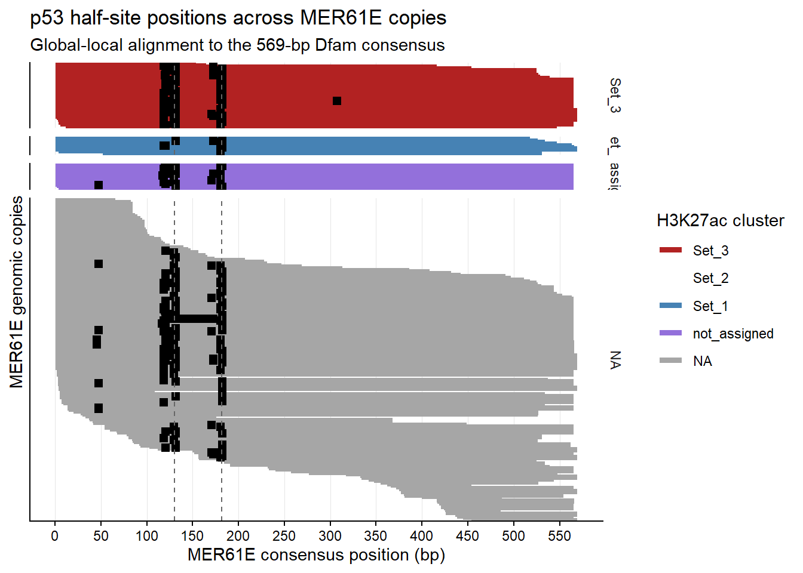
MER61E_motif_summary <- p53_mapped_all_TEs %>%
filter(mapping_status == "Fully mapped") %>%
mutate(
consensus_site = case_when(
consensus_start <= 135 &
consensus_end >= 126 ~ "126-135",
consensus_start <= 186 &
consensus_end >= 177 ~ "177-186",
TRUE ~ "Other"
)
) %>%
distinct(TE_name, cluster, consensus_site) %>%
count(cluster, consensus_site)
MER61E_motif_summary# A tibble: 12 × 3
cluster consensus_site n
<fct> <chr> <int>
1 Set_3 126-135 28
2 Set_3 177-186 30
3 Set_3 Other 22
4 Set_1 126-135 2
5 Set_1 177-186 8
6 Set_1 Other 1
7 not_assigned 126-135 14
8 not_assigned 177-186 11
9 not_assigned Other 10
10 NA 126-135 46
11 NA 177-186 48
12 NA Other 44Adding milliDiv
MER61E_divergence <- repeatmasker_clean %>%
filter(repName == "MER61E") %>%
transmute(
TE_name = paste0(
genoName, ":", start, "-", end
),
milliDiv
)
MER61E_alignment_div <- MER61E_alignment_all_df %>%
mutate(
TE_ID = sub(":[^:]+$", "", as.character(TE_name))
) %>%
left_join(
MER61E_divergence,
by = c("TE_ID" = "TE_name")
)
MER61E_alignment_div %>%
summarise(
total_TEs = dplyr::n(),
missing_milliDiv = sum(is.na(milliDiv))
)# A tibble: 1 × 2
total_TEs missing_milliDiv
<int> <int>
1 267 0p53_mapped_div <- p53_mapped_all_TEs %>%
left_join(
MER61E_alignment_div %>%
dplyr::select(TE_name, milliDiv),
by = "TE_name"
)
ggplot() +
# MER61E alignments colored by cluster
geom_segment(
data = MER61E_alignment_div,
aes(
x = consensus_start,
xend = consensus_end,
y = milliDiv,
yend = milliDiv,
color = cluster
),
linewidth = 1.2,
alpha = 0.65
) +
# p53 half-site positions
geom_point(
data = p53_mapped_div %>%
filter(mapping_status == "Fully mapped"),
aes(
x = (consensus_start + consensus_end) / 2,
y = milliDiv
),
color = "black",
size = 1.5,
alpha = 0.8
) +
# Reference p53 motif regions
geom_vline(
xintercept = c(130.5, 181.5),
linetype = "dashed",
color = "grey40"
) +
facet_wrap(~ cluster, ncol = 2) +
scale_color_manual(
values = c(
"Set_3" = "firebrick",
"Set_1" = "steelblue",
"not_assigned" = "mediumpurple",
"NA" = "grey70"
)
) +
scale_x_continuous(
limits = c(1, 569),
breaks = seq(0, 569, 50)
) +
labs(
title = "MER61E consensus alignment and p53 motifs",
subtitle = "Sequence divergence across H3K27ac response clusters",
x = "MER61E Dfam consensus position (bp)",
y = "RepeatMasker divergence (milliDiv)",
color = "H3K27ac cluster"
) +
theme_classic()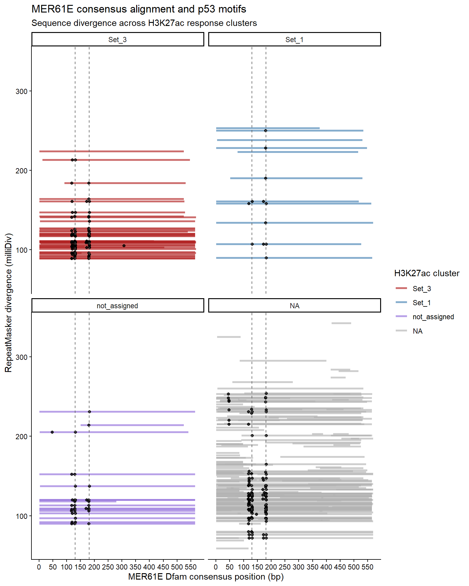
MER61E_alignment_div <- MER61E_alignment_div %>%
arrange(milliDiv, TE_name) %>%
mutate(
TE_order = row_number(),
TE_name = as.character(TE_name)
)
p53_mapped_div <- p53_mapped_all_TEs %>%
mutate(TE_name = as.character(TE_name)) %>%
left_join(
MER61E_alignment_div %>%
dplyr::select(TE_name, TE_order, milliDiv),
by = "TE_name"
)MER61E_consensus_div_plot <- ggplot() +
# MER61E alignment segments
geom_segment(
data = MER61E_alignment_div,
aes(
x = consensus_start,
xend = consensus_end,
y = TE_order,
yend = TE_order,
color = cluster
),
linewidth = 1.2
) +
# Predicted p53 half-sites
geom_segment(
data = p53_mapped_div %>%
filter(mapping_status == "Fully mapped"),
aes(
x = consensus_start,
xend = consensus_end,
y = TE_order,
yend = TE_order
),
color = "black",
linewidth = 2
) +
# Known p53-like consensus locations
geom_vline(
xintercept = c(130.5, 181.5),
linetype = "dashed",
color = "grey50",
linewidth = 0.4
) +
scale_color_manual(
values = c(
"Set_3" = "firebrick",
"Set_1" = "steelblue",
"not_assigned" = "mediumpurple",
"NA" = "grey70"
)
) +
scale_x_continuous(
limits = c(1, 569),
breaks = seq(0, 569, 50)
) +
labs(
title = "MER61E consensus alignment and p53 half-sites",
subtitle = "MER61E copies ordered by sequence divergence",
x = "MER61E Dfam consensus position (bp)",
y = "MER61E copies (ordered by milliDiv)",
color = "H3K27ac cluster"
) +
theme_classic() +
theme(
axis.text.y = element_blank(),
axis.ticks.y = element_blank()
)
MER61E_consensus_div_plot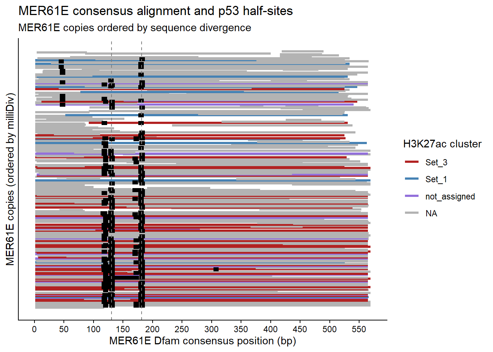
MER61E_consensus_div_plot +
facet_grid(
cluster ~ .,
scales = "free_y",
space = "free_y"
)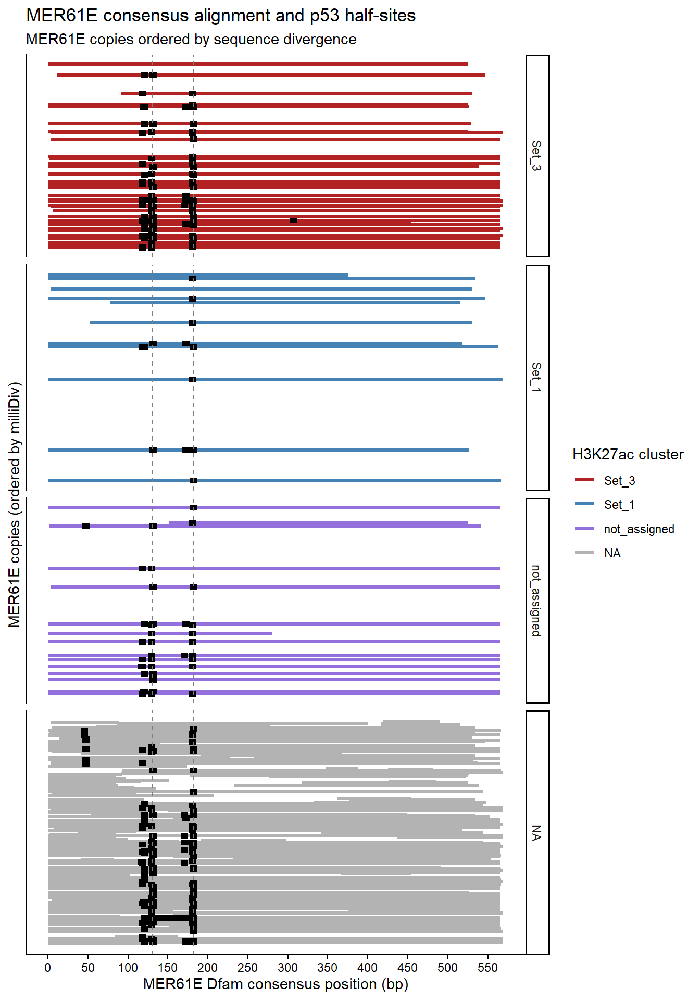
MER61E_position_maps <- lapply(
MER61E_alignments_all,
make_position_map
)MER61E_alignment_blocks <- imap_dfr(
MER61E_position_maps,
function(df, nm) {
if (nrow(df) == 0) return(tibble())
df %>%
arrange(consensus_position, TE_position) %>%
mutate(
new_block = row_number() == 1 |
consensus_position - lag(consensus_position) != 1 |
TE_position - lag(TE_position) != 1,
block_id = cumsum(coalesce(new_block, TRUE))
) %>%
group_by(block_id) %>%
summarise(
consensus_start = min(consensus_position),
consensus_end = max(consensus_position),
n_bases = dplyr::n(),
.groups = "drop"
) %>%
mutate(TE_name = nm)
}
)
MER61E_alignment_div <- MER61E_alignment_div %>%
mutate(TE_name = as.character(TE_name)) %>%
arrange(milliDiv, TE_name) %>%
mutate(TE_order = row_number())
MER61E_alignment_div %>%
dplyr::select(TE_name, milliDiv, TE_order) %>%
head()# A tibble: 6 × 3
TE_name milliDiv TE_order
<chr> <dbl> <int>
1 chr9:122538162-122538283:4 59 1
2 chr16:65769902-65770002:1 69 2
3 chr6:31390293-31390861:3 72 3
4 chr9:121520505-121520587:4 72 4
5 chr6:31487208-31487776:3 76 5
6 chr16:25568787-25569348:1 79 6MER61E_alignment_blocks <- MER61E_alignment_blocks %>%
dplyr::select(
TE_name,
consensus_start,
consensus_end
) %>%
left_join(
MER61E_alignment_div %>%
dplyr::select(TE_name, cluster, milliDiv, TE_order),
by = "TE_name"
)
p53_mapped_div <- p53_mapped_all_TEs %>%
mutate(TE_name = as.character(TE_name)) %>%
dplyr::select(-any_of(c("TE_order", "milliDiv"))) %>%
left_join(
MER61E_alignment_div %>%
dplyr::select(TE_name, TE_order, milliDiv),
by = "TE_name"
)MER61E_alignment_blocks %>%
summarise(
n_TEs = n_distinct(TE_name),
missing_order = sum(is.na(TE_order))
)# A tibble: 1 × 2
n_TEs missing_order
<int> <int>
1 267 0p53_mapped_div %>%
summarise(
missing_order = sum(is.na(TE_order))
)# A tibble: 1 × 1
missing_order
<int>
1 0MER61E_discontinuous_plot <- ggplot() +
# Individual contiguous alignment blocks
geom_segment(
data = MER61E_alignment_blocks,
aes(
x = consensus_start,
xend = consensus_end,
y = TE_order,
yend = TE_order,
color = cluster
),
linewidth = 1.2,
lineend = "butt"
) +
# Predicted p53 half-sites
geom_segment(
data = p53_mapped_div %>%
filter(mapping_status == "Fully mapped"),
aes(
x = consensus_start,
xend = consensus_end,
y = TE_order,
yend = TE_order
),
color = "black",
linewidth = 2.5
) +
# Two duplicated consensus p53 motif regions
geom_vline(
xintercept = c(130.5, 181.5),
linetype = "dashed",
color = "grey40",
linewidth = 0.4
) +
scale_color_manual(
values = c(
"Set_3" = "firebrick",
"Set_1" = "steelblue",
"not_assigned" = "mediumpurple",
"NA" = "grey70"
)
) +
scale_x_continuous(
limits = c(1, 569),
breaks = seq(0, 569, 50)
) +
labs(
title = "MER61E consensus alignment with p53 half-sites",
subtitle = "Discontinuous alignment blocks ordered by sequence divergence",
x = "MER61E Dfam consensus position (bp)",
y = "MER61E copies ordered by milliDiv",
color = "H3K27ac cluster"
) +
theme_classic() +
theme(
axis.text.y = element_blank(),
axis.ticks.y = element_blank()
)
MER61E_discontinuous_plot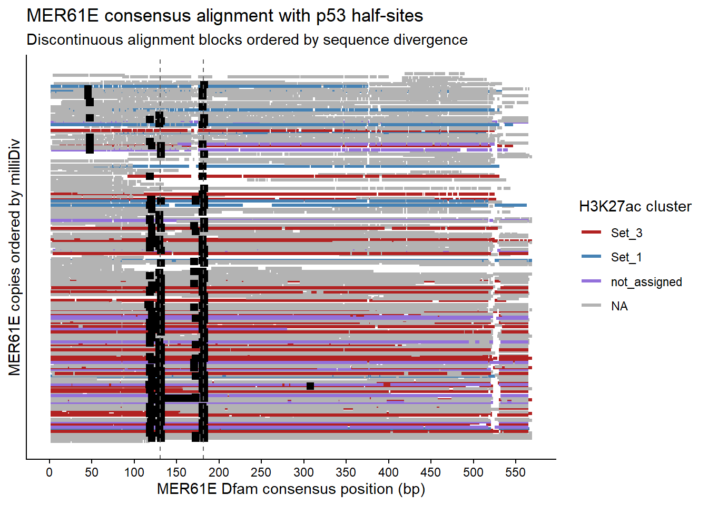
MER61E_discontinuous_plot +
facet_grid(
cluster ~ .,
scales = "free_y",
space = "free_y"
)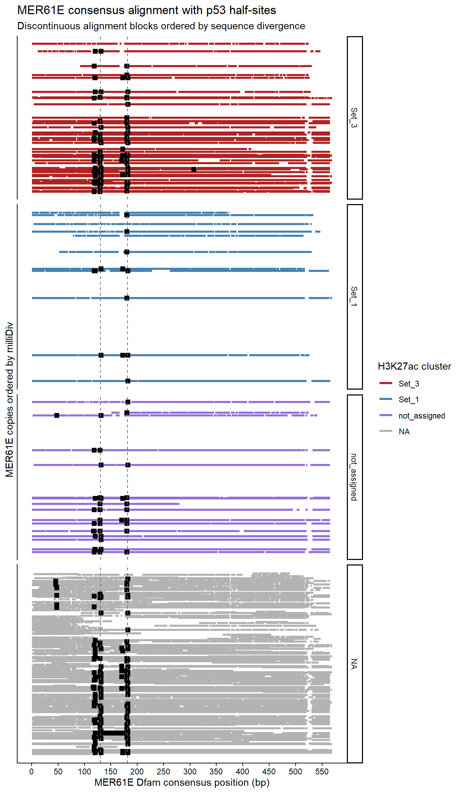
acute_only_MER61E_alignment_blocks <- MER61E_alignment_blocks %>%
dplyr::filter(cluster=="Set_3")
acute_p53_only_mapped_dif <- p53_mapped_div %>%
dplyr::filter(cluster=="Set_3")
acute_MER61E_discontinuous_plot <- ggplot() +
# Individual contiguous alignment blocks
geom_segment(
data = acute_only_MER61E_alignment_blocks,
aes(
x = consensus_start,
xend = consensus_end,
y = TE_order,
yend = TE_order,
color = cluster
),
linewidth = 1.2,
lineend = "butt"
) +
# Predicted p53 half-sites
geom_segment(
data = acute_p53_only_mapped_dif %>%
filter(mapping_status == "Fully mapped"),
aes(
x = consensus_start,
xend = consensus_end,
y = TE_order,
yend = TE_order
),
color = "black",
linewidth = 2.5
) +
# Two duplicated consensus p53 motif regions
geom_vline(
xintercept = c(130.5, 181.5),
linetype = "dashed",
color = "grey40",
linewidth = 0.4
) +
scale_color_manual(
values = c(
"Set_3" = "firebrick",
"Set_1" = "steelblue",
"not_assigned" = "mediumpurple",
"NA" = "grey70"
)
) +
scale_x_continuous(
limits = c(1, 569),
breaks = seq(0, 569, 50)
) +
labs(
title = "MER61E consensus alignment with p53 half-sites, Acute-only MER61E copies",
subtitle = "Discontinuous alignment blocks ordered by sequence divergence",
x = "MER61E Dfam consensus position (bp)",
y = "MER61E copies ordered by milliDiv",
color = "H3K27ac cluster"
) +
theme_classic() +
theme(
axis.text.y = element_blank(),
axis.ticks.y = element_blank()
)
acute_MER61E_discontinuous_plot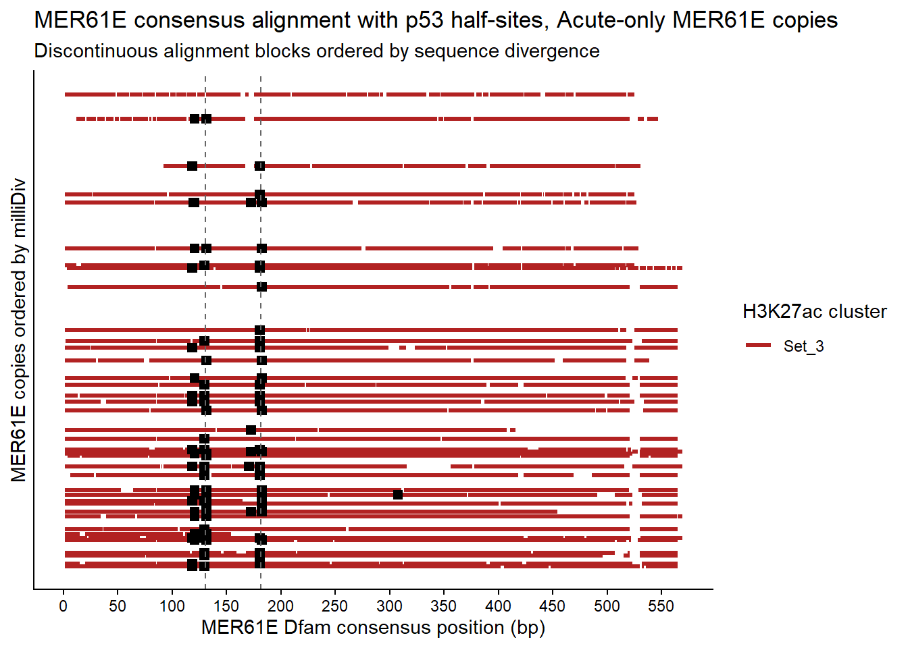
TE_facet_order <- MER61E_alignment_div %>%
mutate(TE_name = as.character(TE_name)) %>%
distinct(TE_name, cluster, milliDiv) %>%
group_by(cluster) %>%
arrange(milliDiv, TE_name, .by_group = TRUE) %>%
mutate(
TE_order_facet = row_number()
) %>%
ungroup()
acute_only_MER61E_alignment_blocks <-
acute_only_MER61E_alignment_blocks %>%
dplyr::select(-any_of("TE_order_facet")) %>%
left_join(
TE_facet_order %>%
dplyr::select(TE_name, TE_order_facet),
by = "TE_name"
)
acute_p53_only_mapped_dif <-
acute_p53_only_mapped_dif %>%
dplyr::select(-any_of("TE_order_facet")) %>%
left_join(
TE_facet_order %>%
dplyr::select(TE_name, TE_order_facet),
by = "TE_name"
)acute_MER61E_discontinuous_plot <- ggplot() +
# Individual contiguous alignment blocks
geom_segment(
data = acute_only_MER61E_alignment_blocks,
aes(
x = consensus_start,
xend = consensus_end,
y = TE_order_facet,
yend = TE_order_facet,
color = cluster
),
linewidth = 1.2,
lineend = "butt"
) +
# Predicted p53 half-sites
geom_segment(
data = acute_p53_only_mapped_dif %>%
dplyr::filter(mapping_status == "Fully mapped"),
aes(
x = consensus_start,
xend = consensus_end,
y = TE_order_facet,
yend = TE_order_facet
),
color = "black",
linewidth = 2.5
) +
# Consensus p53 motif locations
geom_vline(
xintercept = c(130.5, 181.5),
linetype = "dashed",
color = "grey40",
linewidth = 0.4
) +
# Facet by H3K27ac cluster
facet_grid(
cluster ~ .,
scales = "free_y",
space = "free_y"
) +
scale_color_manual(
values = c(
"Set_3" = "firebrick",
"Set_1" = "steelblue",
"not_assigned" = "mediumpurple",
"NA" = "grey70"
)
) +
scale_x_continuous(
limits = c(1, 569),
breaks = seq(0, 569, 50)
) +
scale_y_continuous(
breaks = NULL,
expand = expansion(add = 0.6)
) +
labs(
title = "MER61E consensus alignment with p53 half-sites",
subtitle = "MER61E copies ordered by sequence divergence",
x = "MER61E Dfam consensus position (bp)",
y = "MER61E copies ordered by milliDiv",
color = "H3K27ac cluster"
) +
theme_classic() +
theme(
axis.text.y = element_blank(),
axis.ticks.y = element_blank(),
strip.background = element_blank(),
panel.grid.major.x = element_line(
color = "grey90",
linewidth = 0.3
)
)
acute_MER61E_discontinuous_plot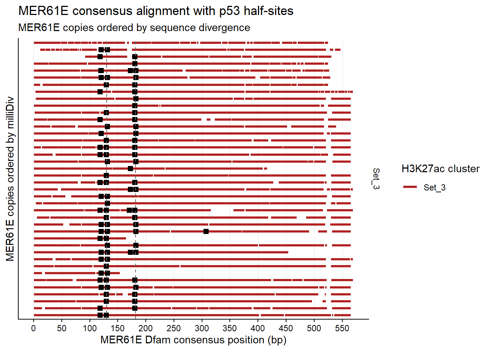
nonacute_clusters <- c("Set_1", "not_assigned", "NA")
nonacute_MER61E_alignment_blocks <- MER61E_alignment_blocks %>%
dplyr::filter(as.character(cluster) %in% nonacute_clusters) %>%
mutate(
TE_name = as.character(TE_name),
cluster = factor(
as.character(cluster),
levels = nonacute_clusters
)
)nonacute_TE_order <- MER61E_alignment_div %>%
mutate(
TE_name = as.character(TE_name),
cluster = as.character(cluster)
) %>%
dplyr::filter(cluster %in% nonacute_clusters) %>%
distinct(TE_name, cluster, milliDiv) %>%
group_by(cluster) %>%
arrange(milliDiv, TE_name, .by_group = TRUE) %>%
mutate(
TE_order_facet = row_number()
) %>%
ungroup()nonacute_MER61E_alignment_blocks <-
nonacute_MER61E_alignment_blocks %>%
dplyr::select(-any_of("TE_order_facet")) %>%
left_join(
nonacute_TE_order %>%
dplyr::select(TE_name, TE_order_facet),
by = "TE_name"
)nonacute_p53_mapped_div <- p53_mapped_all_TEs %>%
mutate(
TE_name = as.character(TE_name),
cluster = as.character(cluster)
) %>%
filter(cluster %in% nonacute_clusters) %>%
dplyr::select(-any_of("TE_order_facet")) %>%
left_join(
nonacute_TE_order %>%
dplyr::select(TE_name, TE_order_facet),
by = "TE_name"
) %>%
mutate(
cluster = factor(cluster, levels = nonacute_clusters)
)nonacute_MER61E_discontinuous_plot <- ggplot() +
# Discontinuous MER61E alignment blocks
geom_segment(
data = nonacute_MER61E_alignment_blocks,
aes(
x = consensus_start,
xend = consensus_end,
y = TE_order_facet,
yend = TE_order_facet,
color = cluster
),
linewidth = 1.2,
lineend = "butt"
) +
# Predicted p53 half-site positions
geom_segment(
data = nonacute_p53_mapped_div %>%
dplyr::filter(mapping_status == "Fully mapped"),
aes(
x = consensus_start,
xend = consensus_end,
y = TE_order_facet,
yend = TE_order_facet
),
color = "black",
linewidth = 2.5
) +
# Two duplicated p53 motif regions on the consensus
geom_vline(
xintercept = c(130.5, 181.5),
linetype = "dashed",
color = "grey40",
linewidth = 0.4
) +
# Separate cluster panels
facet_grid(
cluster ~ .,
scales = "free_y",
space = "free_y"
) +
scale_color_manual(
values = c(
"Set_1" = "steelblue",
"not_assigned" = "mediumpurple",
"NA" = "grey70"
),
drop = FALSE
) +
scale_x_continuous(
limits = c(1, 569),
breaks = seq(0, 569, 50)
) +
scale_y_continuous(
breaks = NULL,
expand = expansion(add = 0.6)
) +
labs(
title = "p53 half-site positions in non-acute MER61E copies",
subtitle = "Discontinuous consensus alignments ordered by milliDiv",
x = "MER61E Dfam consensus position (bp)",
y = "MER61E copies ordered by milliDiv",
color = "H3K27ac cluster"
) +
theme_classic() +
theme(
axis.text.y = element_blank(),
axis.ticks.y = element_blank(),
strip.background = element_blank(),
panel.grid.major.x = element_line(
color = "grey90",
linewidth = 0.3
)
)
nonacute_MER61E_discontinuous_plot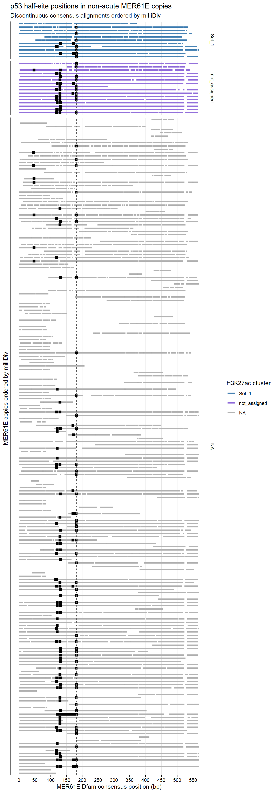
saveRDS(acute_only_MER61E_alignment_blocks,"data/RDS_files/acute_only_MER61E_alignment_blocks.RDS")
saveRDS(acute_p53_only_mapped_dif,"data/RDS_files/acute_p53_only_mapped_dif.RDS")
all_MER61E_alignment_blocks <- bind_rows(
acute_only_MER61E_alignment_blocks,
nonacute_MER61E_alignment_blocks
)
saveRDS(all_MER61E_alignment_blocks,"data/RDS_files/all_MER61E_alignment_blocks.RDS")
saveRDS(MER61E_position_maps,"data/RDS_files/MER61E_position_maps.RDS")
class(MER61E_position_maps)
length(MER61E_position_maps)
str(MER61E_position_maps, max.level = 2)LTR10E_ref <- readDNAStringSet(
"C:/Users/renee/Other_projects_data/DXR_data/DF000000396_LTR10E_consensus.fa")
LTR10E_rmsk <- repeatmasker_clean %>%
filter(repName == "LTR10E") %>%
dplyr::select(
genoName, genoStart, genoEnd, strand,
repName, repStart, repEnd, repLeft,
milliDiv, milliDel, milliIns,RM_id)
nrow(LTR10E_rmsk)[1] 255LTR10E_consensus <- repeatmasker_clean %>%
dplyr::filter(repName == "LTR10E") %>%
mutate(
consensus_start = if_else(
strand == "+", repStart, repLeft),
consensus_end = repEnd,
consensus_length = if_else(strand == "+",
repEnd - repLeft,
repEnd - repStart))
LTR10E_consensus %>%
summarise(n = dplyr::n(),
min_start = min(consensus_start),
max_end = max(consensus_end),
invalid = sum(consensus_start > consensus_end | consensus_start < 0,
na.rm = TRUE))# A tibble: 1 × 4
n min_start max_end invalid
<int> <dbl> <dbl> <int>
1 255 1 633 0LTR10E_rep_cluster <- lint_anno %>%
dplyr::select(repID,cluster,p53_halfsite)
#
hg38 <- BSgenome.Hsapiens.UCSC.hg38
LTR10E_sequences <- getSeq(hg38, LTR10E_regions)
names(LTR10E_regions) <- LTR10E_regions$name
LTR10E_strands <- repeatmasker %>%
dplyr::filter(repName == "LTR10E") %>%
transmute(seqnames = genoName,
start = genoStart + 1, # UCSC 0-based to GRanges 1-based
end = genoEnd,
correct_strand = strand)
LTR10E_df <- as.data.frame(LTR10E_regions) %>%
left_join(
LTR10E_strands,
by = c("seqnames", "start", "end")
)
LTR10E_df %>%
count(correct_strand, sort = TRUE) correct_strand n
1 + 132
2 - 123stopifnot(
nrow(LTR10E_df) == length(LTR10E_regions),
!anyNA(LTR10E_df$correct_strand),
all(LTR10E_df$correct_strand %in% c("+", "-"))
)
strand(LTR10E_regions) <- LTR10E_df$correct_strand
LTR10E_sequences <- getSeq(hg38, LTR10E_regions)
names(LTR10E_sequences) <- LTR10E_regions$name
LTR10E_strands %>%
count(seqnames, start, end) %>%
filter(n > 1)# A tibble: 0 × 4
# ℹ 4 variables: seqnames <chr>, start <dbl>, end <dbl>, n <int>### each unique id?
stopifnot(
length(LTR10E_regions) == length(LTR10E_sequences),
!anyDuplicated(names(LTR10E_sequences)),
!anyNA(names(LTR10E_sequences)),
all(as.character(strand(LTR10E_regions)) %in% c("+", "-"))
)
### CHecking seq length is same
stopifnot(
all(width(LTR10E_regions) == width(LTR10E_sequences))
)
LTR10E_rmsk %>%
group_by(strand) %>%
summarise(
n = dplyr::n(),
min_repStart = min(repStart, na.rm = TRUE),
max_repEnd = max(repEnd, na.rm = TRUE),
min_repLeft = min(repLeft, na.rm = TRUE),
max_repLeft = max(repLeft, na.rm = TRUE),
.groups = "drop"
)# A tibble: 2 × 6
strand n min_repStart max_repEnd min_repLeft max_repLeft
<chr> <int> <dbl> <dbl> <dbl> <dbl>
1 + 132 1 633 -558 0
2 - 123 -612 633 1 571LTR10E_rep_cluster <- LTR10E_rep_cluster %>%
mutate(cluster = replace_na(
as.character(cluster),"NA"),
cluster = factor(cluster,levels = c("Set_3",
"Set_1",
"not_assigned",
"NA")))matchPattern(
"AGACATGCCC",
LTR10E_ref[[1]],
fixed = TRUE
)Views on a 633-letter DNAString subject
subject: TGTAGAAAGTAAAAAGTTTCCTCTTCAAAGTTTC...ATTCTGTTTCTAAATAAACATTTTACTTATAACA
views: NONE# Compare lengths visually
LTR10E_length_df <- tibble(
TE_length = width(LTR10E_sequences)
)
ggplot(LTR10E_length_df, aes(x = TE_length)) +
geom_histogram(
binwidth = 25,
fill = "steelblue",
color = "white"
) +
geom_vline(
xintercept = width(LTR10E_ref)[1],
color = "red",
linetype = "dashed"
) +
theme_classic() +
labs(
x = "Genomic LTR10E length (bp)",
y = "Number of copies"
)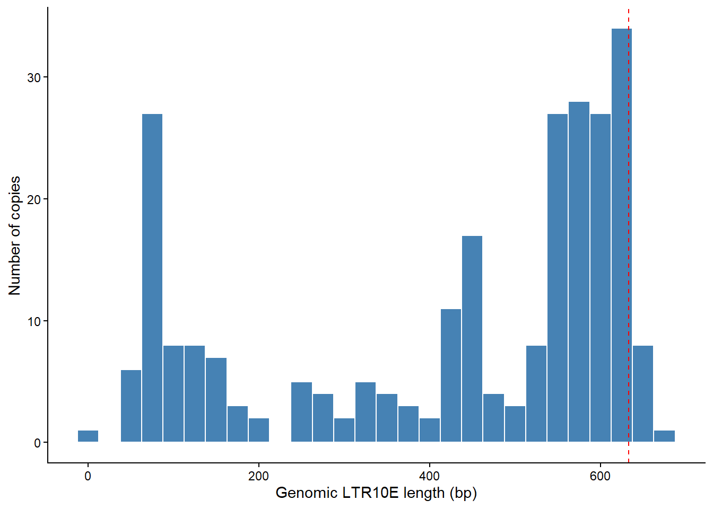
Now to align one to check
# Select one LTR10E copy
test_TE <- LTR10E_sequences[[1]]
# Consensus
test_consensus <- LTR10E_ref[[1]]
# Substitution matrix
submat <- nucleotideSubstitutionMatrix(
match = 2,
mismatch = -3,
baseOnly = FALSE
)
# Global-local alignment:
# align entire TE to a subsequence of the consensus
LTR10E_test_alignment <- pairwiseAlignment(
pattern = test_TE,
subject = test_consensus,
type = "global-local",
substitutionMatrix = submat,
gapOpening = 5,
gapExtension = 2
)
LTR10E_test_alignmentGlobal-Local PairwiseAlignmentsSingleSubject (1 of 1)
pattern: TGTCAAAAGTAAAAG--TTCCCCTTCAAAGTT...TTCTATTTCTAAATAAACATTTTTACATATAA
subject: [1] TGTAGAAAGTAAAAAGTTTCCTCTTCAAAGTT...TTCTGTTTCTAAATAAACATTTT-ACTTATAA
score: 697 # Aligned sequences
alignedPattern(LTR10E_test_alignment)DNAStringSet object of length 1:
width seq
[1] 644 TGTCAAAAGTAAAAG--TTCCCCTTCAAAGTTTC...ATTCTATTTCTAAATAAACATTTTTACATATAAalignedSubject(LTR10E_test_alignment)DNAStringSet object of length 1:
width seq
[1] 644 TGTAGAAAGTAAAAAGTTTCCTCTTCAAAGTTTC...ATTCTGTTTCTAAATAAACATTTT-ACTTATAA# Alignment summary
summary(LTR10E_test_alignment)Global-Local Single Subject Pairwise Alignments
Number of Alignments: 1
Scores:
Min. 1st Qu. Median Mean 3rd Qu. Max.
697 697 697 697 697 697
Number of matches:
Min. 1st Qu. Median Mean 3rd Qu. Max.
529 529 529 529 529 529
Top 10 Mismatch Counts:
SubjectPosition Subject Pattern Count Probability
1 4 A C 1 1
2 5 G A 1 1
3 15 A G 1 1
4 22 T C 1 1
5 72 A G 1 1
6 101 C T 1 1
7 112 G A 1 1
8 117 G A 1 1
9 136 A G 1 1
10 137 A G 1 1pid(LTR10E_test_alignment)[1] 82.14286# Number of matching nucleotides
nmatch(LTR10E_test_alignment)[1] 529# Alignment width (including gaps)
nchar(as.character(
alignedPattern(LTR10E_test_alignment)
))[1] 644# Original TE length
length(test_TE)[1] 618# Dfam consensus length
length(test_consensus)[1] 633start(subject(LTR10E_test_alignment))[1] 1end(subject(LTR10E_test_alignment))[1] 631subject(LTR10E_test_alignment)[1] TGTAGAAAGTAAAAAGTTTCCTCTTCAAAGTTTCC...CATTCTGTTTCTAAATAAACATTTT-ACTTATAA make_LTR10E_position_map <- function(alignment) {
# Aligned nucleotide strings, including gaps
pat <- strsplit(
as.character(alignedPattern(alignment)),
""
)[[1]]
subj <- strsplit(
as.character(alignedSubject(alignment)),
""
)[[1]]
stopifnot(length(pat) == length(subj))
# Position counters
TE_pos <- cumsum(pat != "-")
consensus_pos <- cumsum(subj != "-")
# Obtain starting consensus position
consensus_start <- start(subject(alignment))[1]
# Construct map
tibble(
TE_position = ifelse(
pat == "-",
NA_integer_,
TE_pos
),
consensus_position = ifelse(
subj == "-",
NA_integer_,
consensus_start + consensus_pos - 1L
)
) %>%
dplyr::filter(!is.na(TE_position))
}LTR10E_test_map <- make_LTR10E_position_map(
LTR10E_test_alignment
)
LTR10E_test_map %>%
summarise(
n_TE_bases = dplyr::n(),
n_mapped = sum(!is.na(consensus_position)),
first_consensus = min(consensus_position, na.rm = TRUE),
last_consensus = max(consensus_position, na.rm = TRUE),
n_insertions = sum(is.na(consensus_position))
)# A tibble: 1 × 5
n_TE_bases n_mapped first_consensus last_consensus n_insertions
<int> <int> <int> <int> <int>
1 618 605 1 631 13stopifnot(
nrow(LTR10E_test_map) == length(test_TE),
max(LTR10E_test_map$consensus_position, na.rm = TRUE) ==
end(subject(LTR10E_test_alignment))[1],
all(diff(
na.omit(LTR10E_test_map$consensus_position)
) > 0)
)# Align each LTR10E sequence against the consensus
LTR10E_alignments <- lapply(
seq_along(LTR10E_sequences),
function(i) {
pairwiseAlignment(
pattern = LTR10E_sequences[[i]],
subject = LTR10E_ref[[1]],
type = "global-local",
substitutionMatrix = submat,
gapOpening = 5,
gapExtension = 2
)
}
)
names(LTR10E_alignments) <- names(LTR10E_sequences)
length(LTR10E_alignments)[1] 255LTR10E_position_maps <- lapply(
LTR10E_alignments,
make_LTR10E_position_map
)
names(LTR10E_position_maps) <- names(LTR10E_alignments)map_QC <- tibble(
TE_name = names(LTR10E_position_maps),
TE_length = as.integer(width(LTR10E_sequences)),
mapped_positions = vapply(
LTR10E_position_maps,
nrow,
integer(1)
),
n_consensus_mapped = vapply(
LTR10E_position_maps,
function(x) sum(!is.na(x$consensus_position)),
integer(1)
)
) %>%
mutate(
mapping_fraction = n_consensus_mapped / TE_length,
length_check = TE_length == mapped_positions
)
summary(map_QC$mapping_fraction) Min. 1st Qu. Median Mean 3rd Qu. Max.
0.8813 0.9653 0.9812 0.9737 0.9913 1.0000 table(map_QC$length_check)
TRUE
255 make_LTR10E_blocks <- function(position_map, TE_name) {
position_map %>%
dplyr::filter(!is.na(consensus_position)) %>%
arrange(TE_position) %>%
mutate(
block = cumsum(c(TRUE,diff(consensus_position) != 1))) %>%
group_by(block) %>%
summarise(
consensus_start = min(consensus_position),
consensus_end = max(consensus_position),
.groups = "drop"
) %>%
mutate(TE_name = TE_name)
}
LTR10E_alignment_blocks <- imap_dfr(
LTR10E_position_maps,
make_LTR10E_blocks
)# Check map length for each TE
stopifnot(all(map_QC$length_check))
# Check that all mapped positions fall within the consensus
stopifnot(
all(
LTR10E_alignment_blocks$consensus_start >= 1,
LTR10E_alignment_blocks$consensus_end <=
length(LTR10E_ref[[1]])
)
)
# Number of alignment blocks per TE
LTR10E_alignment_blocks %>%
count(TE_name, name = "n_blocks") %>%
summarise(
min_blocks = min(n_blocks),
median_blocks = median(n_blocks),
max_blocks = max(n_blocks)
)# A tibble: 1 × 3
min_blocks median_blocks max_blocks
<int> <int> <int>
1 1 5 21LTR10E_alignment_QC <- map_QC %>%
mutate(
consensus_coverage = vapply(
LTR10E_position_maps,
function(x) {
length(unique(na.omit(x$consensus_position))) /
length(LTR10E_ref[[1]])
},
numeric(1)
),
percent_identity = vapply(
LTR10E_alignments,
function(x) {
as.numeric(pid(x))
},
numeric(1)
)
)
LTR10E_alignment_QC %>%
summarise(
n = dplyr::n(),
median_mapping = median(mapping_fraction),
median_coverage = median(consensus_coverage),
median_identity = median(percent_identity),
min_coverage = min(consensus_coverage),
min_identity = min(percent_identity)
)# A tibble: 1 × 6
n median_mapping median_coverage median_identity min_coverage min_identity
<int> <dbl> <dbl> <dbl> <dbl> <dbl>
1 255 0.981 0.823 78.4 0.0190 67.6ggplot(
LTR10E_alignment_QC,
aes(
x = consensus_coverage * 100,
y = percent_identity
)
) +
geom_point(alpha = 0.7, size = 2) +
theme_classic() +
labs(
x = "Dfam consensus covered (%)",
y = "Alignment identity (%)",
title = "LTR10E alignment quality"
)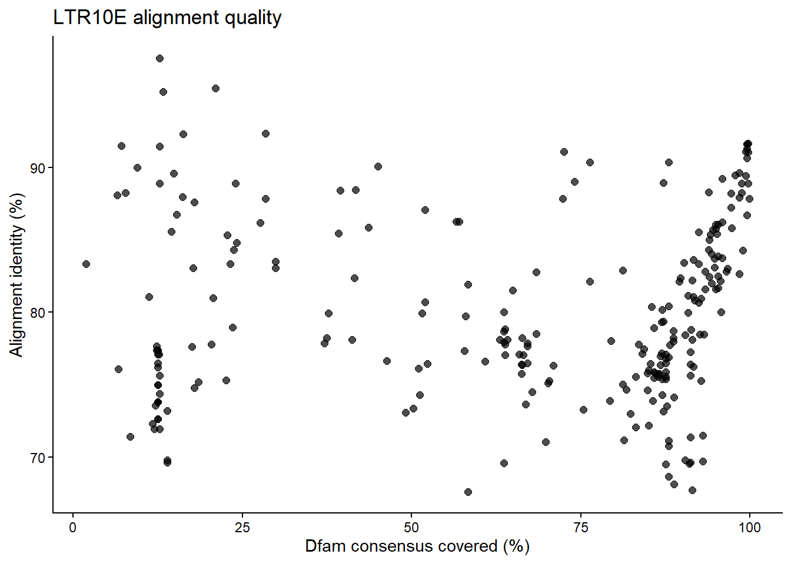
LTR10E_rep_cluster %>%
count(cluster, .drop = FALSE)# A tibble: 4 × 2
cluster n
<fct> <int>
1 Set_3 28
2 Set_1 4
3 not_assigned 3
4 NA 220LTR10E_rmsk_anno <- LTR10E_rmsk %>%
mutate(start = genoStart + 1L,
end = genoEnd) %>%
dplyr::select(genoName, start,end, milliDiv, milliDel, milliIns, RM_id) %>%
dplyr::rename(seqnames = genoName)
LTR10E_anno <- as.data.frame(LTR10E_regions) %>%
mutate(TE_name = name) %>%
dplyr::select(TE_name,seqnames, start, end, strand) %>%
left_join(LTR10E_rmsk_anno, by=c("TE_name"="RM_id")) %>%
left_join(LTR10E_rep_cluster %>%
dplyr::select(repID, cluster, p53_halfsite), by = c("TE_name" = "repID")) %>%
mutate(cluster = factor(tidyr::replace_na(as.character(cluster), "NA"),
levels = c("Set_3", "Set_1", "not_assigned", "NA")))
stopifnot(
nrow(LTR10E_anno) == 255,
!anyDuplicated(LTR10E_anno$TE_name),
!anyNA(LTR10E_anno$milliDiv)
)
LTR10E_anno %>%
count(cluster, .drop = FALSE) cluster n
1 Set_3 28
2 Set_1 4
3 not_assigned 3
4 NA 220summary(LTR10E_anno$milliDiv) Min. 1st Qu. Median Mean 3rd Qu. Max.
15.0 100.0 123.0 132.7 162.5 250.0 LTR10E_anno <- LTR10E_anno %>%
group_by(cluster) %>%
arrange(milliDiv, TE_name, .by_group = TRUE) %>%
mutate(
TE_order_facet = row_number()
) %>%
ungroup()LTR10E_alignment_blocks <- LTR10E_alignment_blocks %>%
left_join(LTR10E_anno %>%
dplyr::select(TE_name, cluster, milliDiv,TE_order_facet),
by = "TE_name")
LTR10E_alignment_blocks_plot <- LTR10E_alignment_blocks %>%
dplyr::select(
TE_name,
block,
consensus_start,
consensus_end
) %>%
left_join(
LTR10E_anno %>%
dplyr::select(
TE_name,
cluster,
milliDiv,
TE_order_facet
),
by = "TE_name"
)
stopifnot(
!anyNA(LTR10E_alignment_blocks_plot$TE_order_facet),
!anyNA(LTR10E_alignment_blocks_plot$milliDiv)
)LTR10E_discontinuous_plot <- ggplot() +
geom_segment(
data = LTR10E_alignment_blocks_plot,
aes(
x = consensus_start,
xend = consensus_end,
y = TE_order_facet,
yend = TE_order_facet,
color = cluster
),
linewidth = 1.2,
lineend = "butt"
) +
facet_grid(
cluster ~ .,
scales = "free_y",
space = "free_y",
drop = FALSE
) +
scale_x_continuous(
limits = c(1, length(LTR10E_ref[[1]])),
expand = expansion(mult = 0.01)
) +
scale_y_continuous(
breaks = NULL,
expand = expansion(add = 0.6)
) +
scale_color_manual(
values = c(
"Set_3" = "#D55E00",
"Set_1" = "#0072B2",
"not_assigned" = "#009E73",
"NA" = "grey60"
),
drop = FALSE
) +
labs(
title = "LTR10E consensus sequence alignment",
subtitle = "Individual genomic LTR10E copies aligned to the Dfam consensus",
x = "Position along LTR10E consensus (bp)",
y = "Individual LTR10E copies",
color = "H3K27ac response"
) +
theme_classic() +
theme(
strip.background = element_blank(),
strip.text.y = element_text(
angle = 0,
face = "bold",
size = 11
),
panel.spacing.y = grid::unit(0.4, "lines"),
legend.position = "bottom"
)
LTR10E_discontinuous_plot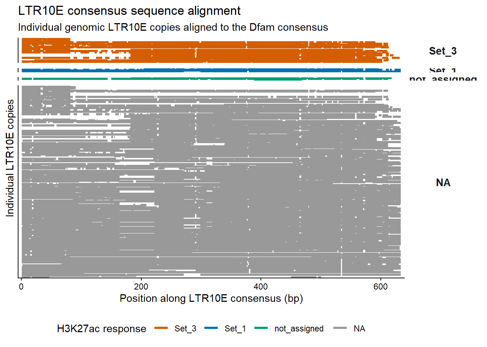
LTR10E_p53_fimo <- read_tsv(
"C:/Users/renee/Other_projects_data/DXR_data/fimo_results/LTR10E_ERV1_LTR_fimo/fimo.tsv", comment = "#",
show_col_types = FALSE)
LTR10E_p53_fimo_gr <- makeGRangesFromDataFrame(
LTR10E_p53_fimo,
seqnames.field = "sequence_name",
start.field = "start",
end.field = "stop",
strand.field = "strand",
keep.extra.columns = TRUE
)# Find overlaps regardless of motif strand
hits <- findOverlaps(
LTR10E_p53_fimo_gr,
LTR10E_regions,
ignore.strand = TRUE
)
# length(hits)
LTR10E_p53_overlaps <- tibble(
fimo_index = queryHits(hits),
TE_index = subjectHits(hits)
) %>%
mutate(
TE_name = names(LTR10E_regions)[TE_index],
motif_start = start(
LTR10E_p53_fimo_gr
)[fimo_index],
motif_end = end(
LTR10E_p53_fimo_gr
)[fimo_index],
motif_strand = as.character(
strand(LTR10E_p53_fimo_gr)
)[fimo_index],
TE_start = start(
LTR10E_regions
)[TE_index],
TE_end = end(
LTR10E_regions
)[TE_index],
TE_strand = as.character(
strand(LTR10E_regions)
)[TE_index]
)
LTR10E_p53_overlaps <- LTR10E_p53_overlaps %>%
mutate(
fully_within_TE =
motif_start >= TE_start &
motif_end <= TE_end
)
LTR10E_p53_overlaps %>%
count(fully_within_TE)# A tibble: 1 × 2
fully_within_TE n
<lgl> <int>
1 TRUE 211LTR10E_p53_overlaps <- LTR10E_p53_overlaps %>%
mutate(
relative_start = if_else(
TE_strand == "+",
motif_start - TE_start + 1L,
TE_end - motif_end + 1L
),
relative_end = if_else(
TE_strand == "+",
motif_end - TE_start + 1L,
TE_end - motif_start + 1L
)
)LTR10E_p53_overlaps %>%
filter(fully_within_TE) %>%
summarise(
n_motifs = dplyr::n(),
n_TEs = n_distinct(TE_name),
min_relative_start = min(relative_start),
max_relative_end = max(relative_end)
)# A tibble: 1 × 4
n_motifs n_TEs min_relative_start max_relative_end
<int> <int> <int> <int>
1 211 154 9 455map_LTR10E_p53 <- function(TE_name, relative_start, relative_end) {
position_map <- LTR10E_position_maps[[TE_name]]
if (is.null(position_map)) {
return(tibble(
consensus_start = NA_integer_,
consensus_end = NA_integer_,
mapped_bases = 0L,
mapping_status = "No position map"
))
}
motif_map <- position_map %>%
dplyr::filter(
TE_position >= relative_start,
TE_position <= relative_end
)
mapped <- motif_map$consensus_position[
!is.na(motif_map$consensus_position)
]
expected_bases <- relative_end - relative_start + 1L
tibble(
consensus_start = if (length(mapped) > 0)
min(mapped) else NA_integer_,
consensus_end = if (length(mapped) > 0)
max(mapped) else NA_integer_,
mapped_bases = length(mapped),
mapping_status = case_when(
length(mapped) == expected_bases ~ "Fully mapped",
length(mapped) > 0 ~ "Partially mapped",
TRUE ~ "Not mapped"
)
)
}LTR10E_p53_mapped <- LTR10E_p53_overlaps %>%
rowwise() %>%
mutate(
mapping = list(
map_LTR10E_p53(
TE_name,
relative_start,
relative_end
)
)
) %>%
ungroup() %>%
tidyr::unnest(mapping)
LTR10E_p53_mapped %>%
count(mapping_status)# A tibble: 3 × 2
mapping_status n
<chr> <int>
1 Fully mapped 165
2 Not mapped 6
3 Partially mapped 40LTR10E_p53_mapped %>%
dplyr::select(
TE_name,
relative_start,
relative_end,
consensus_start,
consensus_end,
mapped_bases,
mapping_status
) %>%
head(15)# A tibble: 15 × 7
TE_name relative_start relative_end consensus_start consensus_end
<chr> <int> <int> <int> <int>
1 chr6:80536053-8053… 45 54 217 224
2 chr12:104232738-10… 231 240 NA NA
3 chr7:152733373-152… 211 220 NA NA
4 chr10:13076461-130… 230 239 227 236
5 chr6:31336985-3133… 257 266 229 238
6 chr11:62222807-622… 228 237 225 226
7 chr15:92949736-929… 231 240 NA NA
8 chr8:144701657-144… 263 272 227 238
9 chr11:3250390-3250… 45 54 212 216
10 chr11:3296193-3296… 45 54 212 216
11 chr8:8362617-83632… 266 275 NA NA
12 chr6:10718468-1071… 45 54 214 216
13 chr2:13682084-1368… 43 52 217 223
14 chr4:24863663-2486… 24 33 202 214
15 chr4:26406461-2640… 45 54 219 224
# ℹ 2 more variables: mapped_bases <int>, mapping_status <chr>LTR10E_p53_mapped %>%
count(mapping_status, mapped_bases) %>%
arrange(mapping_status, mapped_bases)# A tibble: 10 × 3
mapping_status mapped_bases n
<chr> <int> <int>
1 Fully mapped 10 165
2 Not mapped 0 6
3 Partially mapped 2 13
4 Partially mapped 3 3
5 Partially mapped 4 2
6 Partially mapped 5 11
7 Partially mapped 6 1
8 Partially mapped 7 6
9 Partially mapped 8 2
10 Partially mapped 9 2Looking at the partially mapped
example_motif <- LTR10E_p53_mapped %>%
dplyr::filter(
mapping_status == "Partially mapped",
mapped_bases == 2
) %>%
dplyr::slice(1)
# Extract its nucleotide-level position map
example_map <- LTR10E_position_maps[[
example_motif$TE_name
]]
# Display motif and surrounding positions
example_map %>%
filter(
TE_position >= example_motif$relative_start - 15,
TE_position <= example_motif$relative_end + 15
) %>%
mutate(
within_motif =
TE_position >= example_motif$relative_start &
TE_position <= example_motif$relative_end
)# A tibble: 40 × 3
TE_position consensus_position within_motif
<int> <int> <lgl>
1 213 216 FALSE
2 214 217 FALSE
3 215 218 FALSE
4 216 NA FALSE
5 217 NA FALSE
6 218 NA FALSE
7 219 NA FALSE
8 220 NA FALSE
9 221 NA FALSE
10 222 219 FALSE
# ℹ 30 more rowsexample_TE <- LTR10E_sequences[[
example_motif$TE_name
]]
example_local_alignment <- pairwiseAlignment(
pattern = example_TE,
subject = LTR10E_ref[[1]],
type = "local",
substitutionMatrix = submat,
gapOpening = 5,
gapExtension = 2
)
example_global_alignment <- LTR10E_alignments[[
example_motif$TE_name
]]
# Compare
example_local_alignmentLocal PairwiseAlignmentsSingleSubject (1 of 1)
pattern: [1] TGTGAAAAGTAAAAAGTT-CCTCTTCAAAGTT...TGCAGAAATTAAA-ATTGCCTTGCTGGGAAAA
subject: [1] TGTAGAAAGTAAAAAGTTTCCTCTTCAAAGTT...TGCAGAAAGTAAAGATTGCCTTGCTGAGAGAA
score: 484 example_global_alignmentGlobal-Local PairwiseAlignmentsSingleSubject (1 of 1)
pattern: TGTGAAAAGTAAAAAGTT-CCTCTTCAAAGTT...ACACTGAAAA---------CTGATTTCTAACA
subject: [1] TGTAGAAAGTAAAAAGTTTCCTCTTCAAAGTT...GCACCGAGGAACAAGCATTCTG-TTTCTAA-A
score: 464 pid(example_local_alignment)[1] 77.22603pid(example_global_alignment)[1] 75.27048example_local_map <- make_LTR10E_position_map(
example_local_alignment
)
example_global_map <- LTR10E_position_maps[[
example_motif$TE_name
]]
data.frame(
alignment = c("Local", "Global-local"),
TE_start = c(
start(pattern(example_local_alignment)),
start(pattern(example_global_alignment))
),
TE_end = c(
end(pattern(example_local_alignment)),
end(pattern(example_global_alignment))
),
consensus_start = c(
start(subject(example_local_alignment)),
start(subject(example_global_alignment))
),
consensus_end = c(
end(subject(example_local_alignment)),
end(subject(example_global_alignment))
)
) alignment TE_start TE_end consensus_start consensus_end
1 Local 1 570 1 552
2 Global-local 1 621 1 613example_local_map <- make_LTR10E_position_map(
example_local_alignment
)
example_global_map <- make_LTR10E_position_map(
example_global_alignment
)
compare_motif_mapping <- function(position_map, motif) {
position_map %>%
filter(
TE_position >= motif$relative_start,
TE_position <= motif$relative_end
) %>%
summarise(
mapped_bases = sum(!is.na(consensus_position)),
consensus_start = if (all(is.na(consensus_position)))
NA_integer_ else min(consensus_position, na.rm = TRUE),
consensus_end = if (all(is.na(consensus_position)))
NA_integer_ else max(consensus_position, na.rm = TRUE)
)
}
bind_rows(
compare_motif_mapping(example_local_map, example_motif) %>%
mutate(alignment = "Local"),
compare_motif_mapping(example_global_map, example_motif) %>%
mutate(alignment = "Global-local")
)# A tibble: 2 × 4
mapped_bases consensus_start consensus_end alignment
<int> <int> <int> <chr>
1 2 225 226 Local
2 2 225 226 Global-localcheck_LTR10E_motif_gaps <- function(
TE_name, relative_start, relative_end) {
position_map <- LTR10E_position_maps[[TE_name]]
motif_positions <- position_map %>%
filter(
TE_position >= relative_start,
TE_position <= relative_end,
!is.na(consensus_position)
) %>%
arrange(TE_position)
consensus_positions <- motif_positions$consensus_position
tibble(
n_mapped = length(consensus_positions),
n_consensus_gaps = if (length(consensus_positions) > 1) {
sum(pmax(diff(consensus_positions) - 1L, 0L))
} else {
0L
},
is_contiguous = if (length(consensus_positions) > 1) {
all(diff(consensus_positions) == 1L)
} else {
length(consensus_positions) == 1L
}
)
}
LTR10E_motif_gap_QC <- LTR10E_p53_mapped %>%
rowwise() %>%
mutate(
gap_QC = list(
check_LTR10E_motif_gaps(
TE_name,
relative_start,
relative_end
)
)
) %>%
ungroup() %>%
tidyr::unnest(gap_QC)
LTR10E_motif_gap_QC %>%
count(mapping_status, is_contiguous)# A tibble: 4 × 3
mapping_status is_contiguous n
<chr> <lgl> <int>
1 Fully mapped FALSE 57
2 Fully mapped TRUE 108
3 Not mapped FALSE 6
4 Partially mapped TRUE 40LTR10E_motif_gap_QC %>%
filter(
mapping_status == "Fully mapped",
!is_contiguous
) %>%
count(n_consensus_gaps, sort = TRUE)# A tibble: 11 × 2
n_consensus_gaps n
<int> <int>
1 57 26
2 2 12
3 3 4
4 8 4
5 17 3
6 13 2
7 31 2
8 9 1
9 10 1
10 19 1
11 28 1LTR10E_motif_gap_QC %>%
filter(
mapping_status == "Fully mapped",
!is_contiguous
) %>%
summarise(
n = dplyr::n(),
median_gap = median(n_consensus_gaps),
mean_gap = mean(n_consensus_gaps),
max_gap = max(n_consensus_gaps)
)# A tibble: 1 × 4
n median_gap mean_gap max_gap
<int> <int> <dbl> <int>
1 57 28 30.8 57make_p53_motif_blocks <- function(
TE_name, relative_start, relative_end, motif_id) {
position_map <- LTR10E_position_maps[[TE_name]]
if (is.null(position_map)) {
return(tibble())
}
motif_positions <- position_map %>%
filter(
TE_position >= relative_start,
TE_position <= relative_end,
!is.na(consensus_position)
) %>%
arrange(TE_position)
if (nrow(motif_positions) == 0) {
return(tibble())
}
motif_positions %>%
mutate(
block = cumsum(
c(TRUE, diff(consensus_position) != 1L)
)
) %>%
group_by(block) %>%
summarise(
consensus_start = min(consensus_position),
consensus_end = max(consensus_position),
.groups = "drop"
) %>%
mutate(
TE_name = TE_name,
motif_id = motif_id
)
}LTR10E_p53_mapped <- LTR10E_p53_mapped %>%
mutate(motif_id = row_number())
LTR10E_p53_blocks <- purrr::pmap_dfr(
LTR10E_p53_mapped %>%
dplyr::select(
TE_name,
relative_start,
relative_end,
motif_id
),
make_p53_motif_blocks
)LTR10E_p53_blocks <- LTR10E_p53_blocks %>%
left_join(
LTR10E_p53_mapped %>%
dplyr::select(
motif_id,
mapping_status
),
by = "motif_id"
) %>%
left_join(
LTR10E_anno %>%
dplyr::select(
TE_name,
cluster,
milliDiv,
TE_order_facet
),
by = "TE_name"
)LTR10E_p53_blocks_plot <- ggplot() +
# LTR10E sequence alignment blocks
geom_segment(
data = LTR10E_alignment_blocks_plot,
aes(
x = consensus_start,
xend = consensus_end,
y = TE_order_facet,
yend = TE_order_facet,
color = cluster
),
linewidth = 1.2,
lineend = "butt"
) +
# Individual p53 mapped blocks
geom_segment(
data = LTR10E_p53_blocks,
aes(
x = consensus_start,
xend = consensus_end,
y = TE_order_facet,
yend = TE_order_facet,
linetype = mapping_status
),
color = "black",
linewidth = 2.4,
lineend = "butt"
) +
facet_grid(
cluster ~ .,
scales = "free_y",
space = "free_y",
drop = FALSE
) +
scale_color_manual(
values = c(
"Set_3" = "#D55E00",
"Set_1" = "#0072B2",
"not_assigned" = "#009E73",
"NA" = "grey60"
),
drop = FALSE
) +
scale_linetype_manual(
values = c(
"Fully mapped" = "solid",
"Partially mapped" = "dashed"
)
) +
scale_x_continuous(
limits = c(1, length(LTR10E_ref[[1]])),
expand = expansion(mult = 0.01)
) +
scale_y_continuous(
breaks = NULL,
expand = expansion(add = 0.6)
) +
theme_classic() +
labs(
title = "p53 half-site distribution across LTR10E copies",
subtitle = "Nucleotide-level projection onto the Dfam consensus",
x = "LTR10E consensus position (bp)",
y = "Individual LTR10E copies",
color = "H3K27ac response",
linetype = "p53 mapping"
) +
theme(
strip.background = element_blank(),
strip.text.y = element_text(angle = 0),
legend.position = "bottom"
)
LTR10E_p53_blocks_plot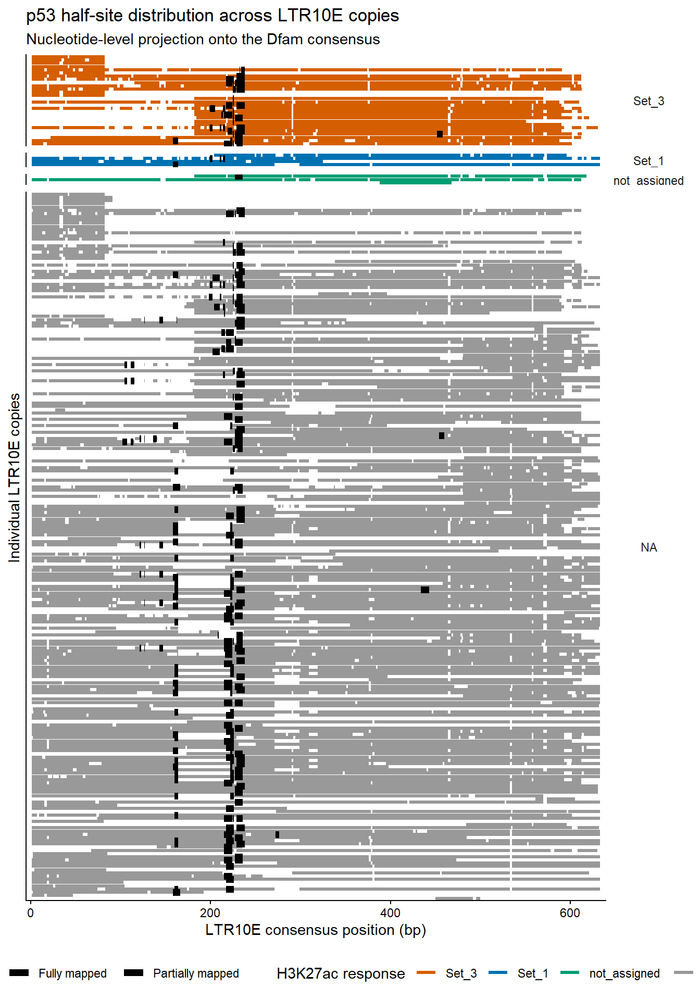
LTR10E_p53_mapped <- LTR10E_p53_mapped %>%
left_join(
LTR10E_anno %>%
dplyr::select(
TE_name,
cluster,
milliDiv,
TE_order_facet
),
by = "TE_name"
)
LTR10E_p53_mapped %>%
left_join(
LTR10E_motif_gap_QC %>%
mutate(motif_id = row_number()) %>%
dplyr::select(
motif_id,
is_contiguous,
n_consensus_gaps
),
by = "motif_id"
) %>%
mutate(
mapping_category = case_when(
mapping_status == "Not mapped" ~ "Unmapped",
mapping_status == "Partially mapped" ~ "Partial",
!is_contiguous ~ "Fully mapped, discontinuous",
TRUE ~ "Fully mapped, contiguous"
)
) %>%
count(cluster, mapping_category)# A tibble: 12 × 3
cluster mapping_category n
<fct> <chr> <int>
1 Set_3 Fully mapped, contiguous 14
2 Set_3 Fully mapped, discontinuous 4
3 Set_3 Partial 15
4 Set_3 Unmapped 2
5 Set_1 Fully mapped, discontinuous 1
6 Set_1 Partial 1
7 not_assigned Fully mapped, contiguous 1
8 not_assigned Unmapped 1
9 NA Fully mapped, contiguous 93
10 NA Fully mapped, discontinuous 52
11 NA Partial 24
12 NA Unmapped 3LTR10E_anno %>%
count(cluster, .drop = FALSE)# A tibble: 4 × 2
cluster n
<fct> <int>
1 Set_3 28
2 Set_1 4
3 not_assigned 3
4 NA 220LTR10E_p53_mapped %>%
group_by(cluster) %>%
summarise(
n_motifs = dplyr::n(),
n_TE = n_distinct(TE_name),
.groups = "drop"
)# A tibble: 4 × 3
cluster n_motifs n_TE
<fct> <int> <int>
1 Set_3 35 20
2 Set_1 2 2
3 not_assigned 2 2
4 NA 172 130LTR10E_p53_blocks_plot <- ggplot() +
# LTR10E alignment blocks
geom_segment(
data = LTR10E_alignment_blocks_plot,
aes(
x = consensus_start,
xend = consensus_end,
y = TE_order_facet,
yend = TE_order_facet,
color = cluster
),
linewidth = 1.2,
lineend = "butt"
) +
scale_color_manual(
name = "H3K27ac response",
values = c(
"Set_3" = "#D55E00",
"Set_1" = "#0072B2",
"not_assigned" = "#009E73",
"NA" = "grey60"
)
) +
# Start a new color scale for p53
ggnewscale::new_scale_color() +
# p53 motif blocks
geom_segment(
data = LTR10E_p53_blocks,
aes(
x = consensus_start,
xend = consensus_end,
y = TE_order_facet,
yend = TE_order_facet,
color = mapping_status
),
linewidth = 2.8,
lineend = "butt"
) +
scale_color_manual(
name = "p53 mapping",
values = c(
"Fully mapped" = "black",
"Partially mapped" = "cornflowerblue"
)
) +
facet_grid(
cluster ~ .,
scales = "free_y",
space = "free_y",
drop = TRUE
) +
scale_x_continuous(
limits = c(1, length(LTR10E_ref[[1]])),
expand = expansion(mult = 0.01)
) +
scale_y_continuous(
breaks = NULL,
expand = expansion(add = 0.6)
) +
theme_classic() +
labs(
title = "p53 half-site distribution across LTR10E copies",
subtitle = "Nucleotide-level projection onto the Dfam consensus",
x = "LTR10E consensus position (bp)",
y = "Individual LTR10E copies"
) +
theme(
strip.background = element_blank(),
strip.text.y = element_text(angle = 0),
legend.position = "bottom"
)
LTR10E_p53_blocks_plot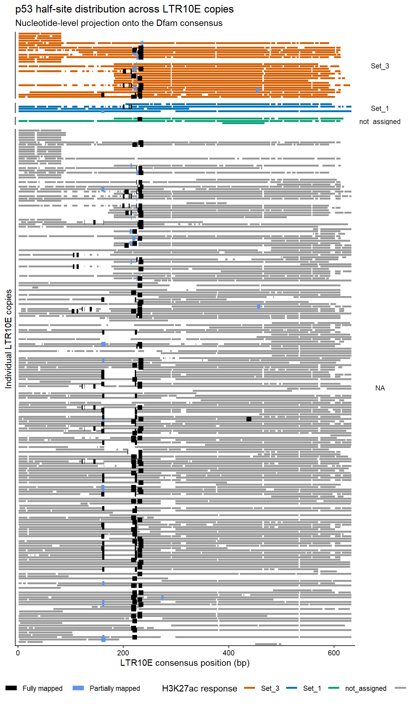
plot_LTR10E_p53 <- function(clusters_to_plot) {
LTR10E_p53_blocks_plot %+%
NULL
}LTR10E_acute_plot <- LTR10E_p53_blocks_plot
LTR10E_acute_plot$layers[[1]]$data <-
LTR10E_alignment_blocks_plot %>%
filter(cluster == "Set_3")
LTR10E_acute_plot$layers[[2]]$data <-
LTR10E_p53_blocks %>%
filter(cluster == "Set_3")
LTR10E_acute_plot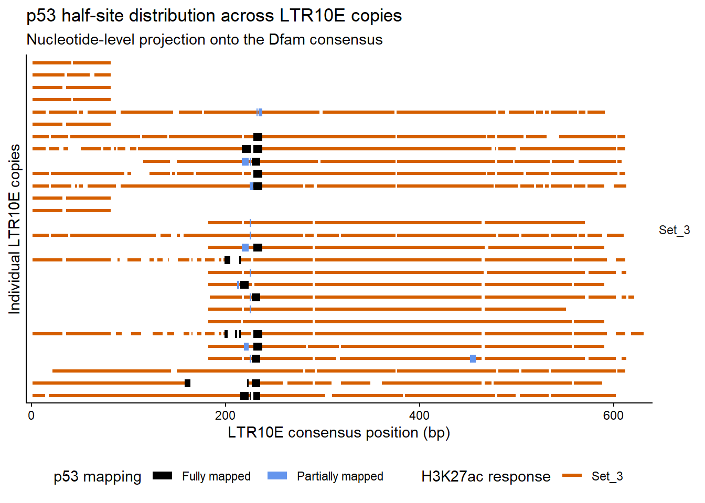
LTR10E_nonacute_plot <- LTR10E_p53_blocks_plot
LTR10E_nonacute_plot$layers[[1]]$data <-
LTR10E_alignment_blocks_plot %>%
filter(cluster != "Set_3")
LTR10E_nonacute_plot$layers[[2]]$data <-
LTR10E_p53_blocks %>%
filter(cluster != "Set_3")
LTR10E_nonacute_plot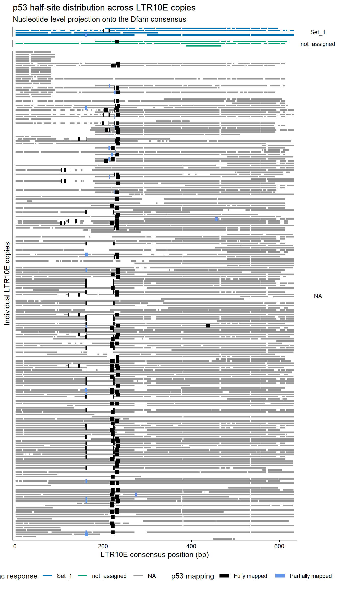
make_TE_nucleotide_table <- function(
position_maps,
TE_sequences,
TE_consensus,
family) {
consensus_seq <- toupper(
as.character(TE_consensus[[1]])
)
consensus_length <- nchar(consensus_seq)
stopifnot(
!is.null(names(TE_sequences)),
!is.null(names(position_maps)),
!anyDuplicated(names(TE_sequences)),
all(names(position_maps) %in% names(TE_sequences))
)
nucleotide_table <- imap_dfr(
position_maps,
function(position_map, TE_name) {
sequence <- toupper(
as.character(TE_sequences[[TE_name]])
)
position_map %>%
filter(!is.na(consensus_position)) %>%
transmute(
TE_name = TE_name,
TE_position,
consensus_position,
TE_base = substring(
sequence,
TE_position,
TE_position
),
consensus_base = substring(
consensus_seq,
consensus_position,
consensus_position
)
)
}
)
stopifnot(
all(nucleotide_table$consensus_position >= 1),
all(nucleotide_table$consensus_position <= consensus_length),
!anyDuplicated(
nucleotide_table[c("TE_name", "consensus_position")]
)
)
nucleotide_table %>%
mutate(
family = family,
valid_base =
TE_base %in% c("A", "C", "G", "T") &
consensus_base %in% c("A", "C", "G", "T"),
matches_consensus =
valid_base & TE_base == consensus_base
)
}LTR10E_nucleotide_table <- make_TE_nucleotide_table(
position_maps = LTR10E_position_maps,
TE_sequences = LTR10E_sequences,
TE_consensus = LTR10E_ref,
family = "LTR10E"
)
MER61E_nucleotide_table <- make_TE_nucleotide_table(
position_maps = MER61E_position_maps,
TE_sequences = MER61E_sequences,
TE_consensus = MER61E_ref,
family = "MER61E"
)calculate_TE_consensus_stats <- function(
nucleotide_table,
n_total_copies,
consensus_length) {
nucleotide_table %>%
group_by(family, consensus_position) %>%
summarise(
n_covered = n_distinct(TE_name),
n_valid = sum(valid_base),
n_matching = sum(matches_consensus),
.groups = "drop"
) %>%
complete(
family,
consensus_position = seq_len(consensus_length),
fill = list(
n_covered = 0L,
n_valid = 0L,
n_matching = 0L
)
) %>%
mutate(
coverage_percent =
100 * n_covered / n_total_copies,
identity_percent = if_else(
n_valid > 0,
100 * n_matching / n_valid,
NA_real_
)
)
}LTR10E_consensus_stats <- calculate_TE_consensus_stats(
LTR10E_nucleotide_table,
n_total_copies = length(LTR10E_sequences),
consensus_length = length(LTR10E_ref[[1]])
)
MER61E_consensus_stats <- calculate_TE_consensus_stats(
MER61E_nucleotide_table,
n_total_copies = length(MER61E_sequences),
consensus_length = length(MER61E_ref[[1]])
)TE_consensus_stats <- bind_rows(
LTR10E_consensus_stats,
MER61E_consensus_stats
)TE_coverage_plot <- ggplot(
TE_consensus_stats,
aes(
x = consensus_position,
y = coverage_percent
)
) +
geom_line(
color = "steelblue",
linewidth = 0.7
) +
facet_wrap(
~family,
scales = "free_x",
ncol = 1
) +
scale_y_continuous(
limits = c(0, 100)
) +
theme_classic() +
labs(
x = "Dfam consensus position (bp)",
y = "Genomic copies covering position (%)",
title = "Consensus sequence coverage"
)
TE_coverage_plot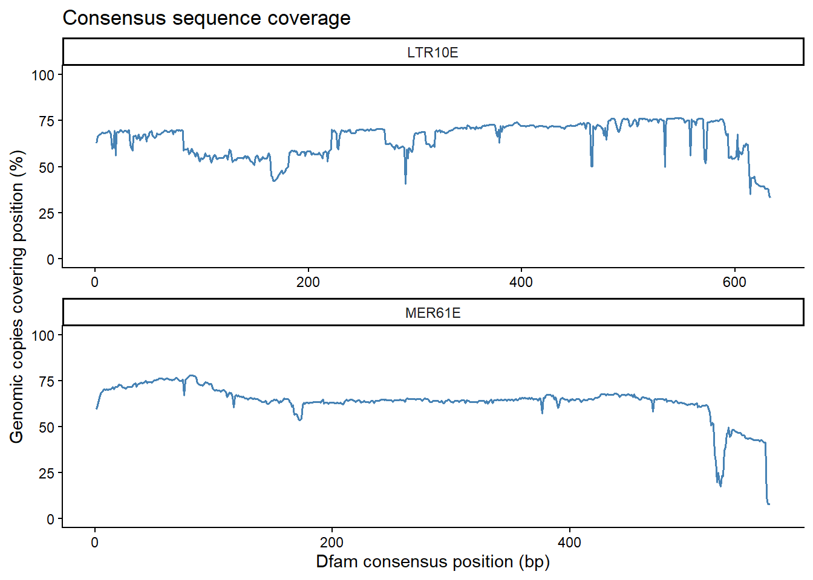
TE_identity_plot <- ggplot(
TE_consensus_stats,
aes(
x = consensus_position,
y = identity_percent
)
) +
geom_line(
color = "darkred",
linewidth = 0.7
) +
facet_wrap(
~family,
scales = "free_x",
ncol = 1
) +
scale_y_continuous(
limits = c(0, 100)
) +
theme_classic() +
labs(
x = "Dfam consensus position (bp)",
y = "Sequence identity (%)",
title = "Nucleotide conservation relative to Dfam"
)
TE_identity_plot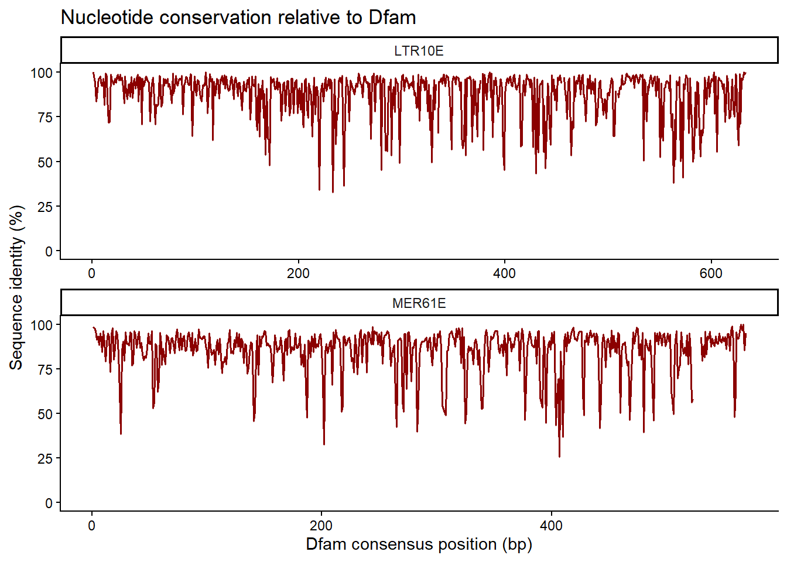
LTR10E_nucleotide_annotated <- LTR10E_nucleotide_table %>%
left_join(
LTR10E_anno %>%
dplyr::select(TE_name, cluster, milliDiv),
by = "TE_name"
)make_TE_nucleotide_table <- function(
position_maps,
TE_sequences,
TE_consensus,
family) {
# Accept DNAString or DNAStringSet
if (inherits(TE_consensus, "DNAStringSet")) {
TE_consensus <- TE_consensus[[1]]
}
consensus_seq <- toupper(
as.character(TE_consensus)
)
consensus_length <- length(TE_consensus)
stopifnot(
!is.null(names(TE_sequences)),
!is.null(names(position_maps)),
!anyDuplicated(names(TE_sequences)),
all(names(position_maps) %in% names(TE_sequences))
)
nucleotide_table <- purrr::imap_dfr(
position_maps,
function(position_map, TE_name) {
sequence <- toupper(
as.character(TE_sequences[[TE_name]])
)
position_map %>%
filter(!is.na(consensus_position)) %>%
transmute(
TE_name = TE_name,
TE_position,
consensus_position,
TE_base = substring(
sequence, TE_position, TE_position
),
consensus_base = substring(
consensus_seq,
consensus_position,
consensus_position
)
)
}
)
# Validate consensus-coordinate mapping
stopifnot(
all(nucleotide_table$consensus_position >= 1),
all(nucleotide_table$consensus_position <= consensus_length),
!anyDuplicated(
nucleotide_table[c("TE_name", "consensus_position")]
)
)
nucleotide_table %>%
mutate(
family = family,
valid_base =
TE_base %in% c("A", "C", "G", "T") &
consensus_base %in% c("A", "C", "G", "T"),
matches_consensus =
valid_base & TE_base == consensus_base
)
}LTR10E_nucleotide_table <- make_TE_nucleotide_table(
position_maps = LTR10E_position_maps,
TE_sequences = LTR10E_sequences,
TE_consensus = LTR10E_ref,
family = "LTR10E"
)
head(LTR10E_nucleotide_table)# A tibble: 6 × 8
TE_name TE_position consensus_position TE_base consensus_base family
<chr> <int> <int> <chr> <chr> <chr>
1 chr1:3955922-395… 1 1 T T LTR10E
2 chr1:3955922-395… 2 2 G G LTR10E
3 chr1:3955922-395… 3 3 T T LTR10E
4 chr1:3955922-395… 4 4 C A LTR10E
5 chr1:3955922-395… 5 5 A G LTR10E
6 chr1:3955922-395… 6 6 A A LTR10E
# ℹ 2 more variables: valid_base <lgl>, matches_consensus <lgl>MER61E_nucleotide_table <- make_TE_nucleotide_table(
position_maps = MER61E_position_maps,
TE_sequences = MER61E_sequences,
TE_consensus = MER61E_ref,
family = "MER61E"
)
head(MER61E_nucleotide_table)# A tibble: 6 × 8
TE_name TE_position consensus_position TE_base consensus_base family
<chr> <int> <int> <chr> <chr> <chr>
1 chr1:63032708-63… 1 424 T T MER61E
2 chr1:63032708-63… 2 425 T T MER61E
3 chr1:63032708-63… 3 426 T T MER61E
4 chr1:63032708-63… 4 427 C C MER61E
5 chr1:63032708-63… 5 428 G G MER61E
6 chr1:63032708-63… 6 429 C C MER61E
# ℹ 2 more variables: valid_base <lgl>, matches_consensus <lgl>calculate_TE_consensus_stats <- function(
nucleotide_table,
n_total_copies,
consensus_length) {
nucleotide_table %>%
group_by(family, consensus_position) %>%
summarise(
n_covered = n_distinct(TE_name),
n_valid = sum(valid_base),
n_matching = sum(matches_consensus),
.groups = "drop"
) %>%
tidyr::complete(
family,
consensus_position = seq_len(consensus_length),
fill = list(
n_covered = 0L,
n_valid = 0L,
n_matching = 0L
)
) %>%
mutate(
coverage_percent =
100 * n_covered / n_total_copies,
identity_percent = if_else(
n_valid > 0,
100 * n_matching / n_valid,
NA_real_
)
)
}
stopifnot(
all(TE_consensus_stats$coverage_percent >= 0),
all(TE_consensus_stats$coverage_percent <= 100),
all(
TE_consensus_stats$identity_percent[
!is.na(TE_consensus_stats$identity_percent)
] <= 100
)
)TE_coverage_plot <- ggplot(
TE_consensus_stats,
aes(
x = consensus_position,
y = coverage_percent
)
) +
geom_line(
color = "#0072B2",
linewidth = 0.7
) +
facet_wrap(
~family,
ncol = 1,
scales = "free_x"
) +
scale_y_continuous(
limits = c(0, 100),
expand = expansion(mult = c(0, 0.03))
) +
theme_classic() +
labs(
x = "Dfam consensus position (bp)",
y = "Genomic copies covering position (%)",
title = "LTR10E and MER61E consensus coverage"
) +
theme(
strip.background = element_blank(),
strip.text = element_text(face = "bold")
)
TE_coverage_plot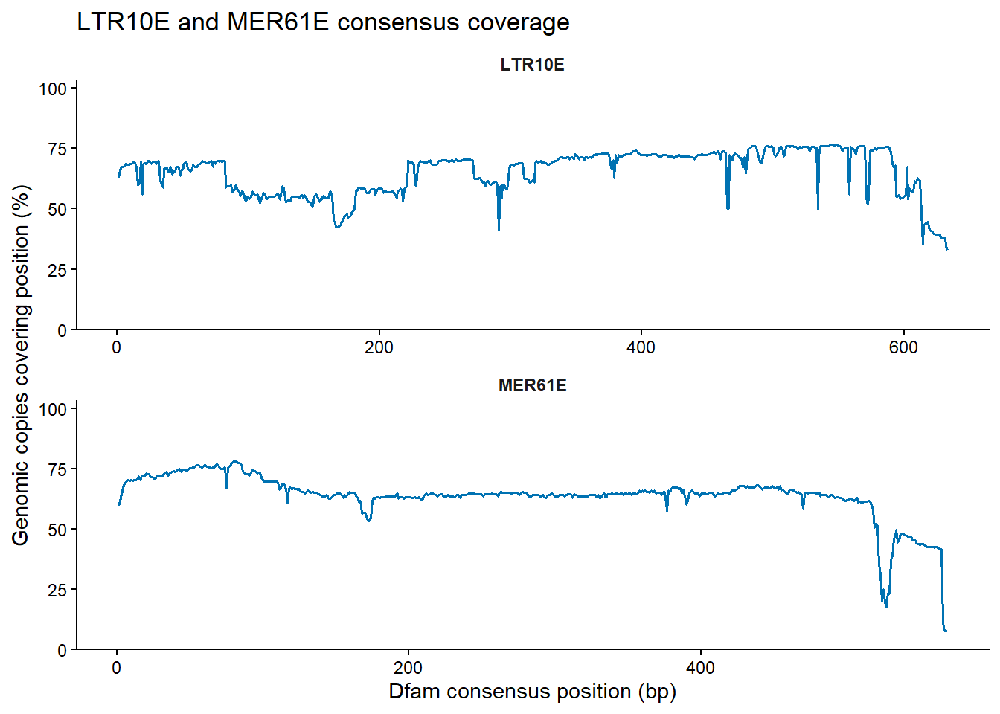
TE_identity_plot <- ggplot(
TE_consensus_stats,
aes(
x = consensus_position,
y = identity_percent
)
) +
geom_line(
color = "#D55E00",
linewidth = 0.7,
na.rm = TRUE
) +
facet_wrap(
~family,
ncol = 1,
scales = "free_x"
) +
scale_y_continuous(
limits = c(0, 100),
expand = expansion(mult = c(0, 0.03))
) +
theme_classic() +
labs(
x = "Dfam consensus position (bp)",
y = "Nucleotide identity (%)",
title = "LTR10E and MER61E sequence conservation"
) +
theme(
strip.background = element_blank(),
strip.text = element_text(face = "bold")
)
TE_identity_plot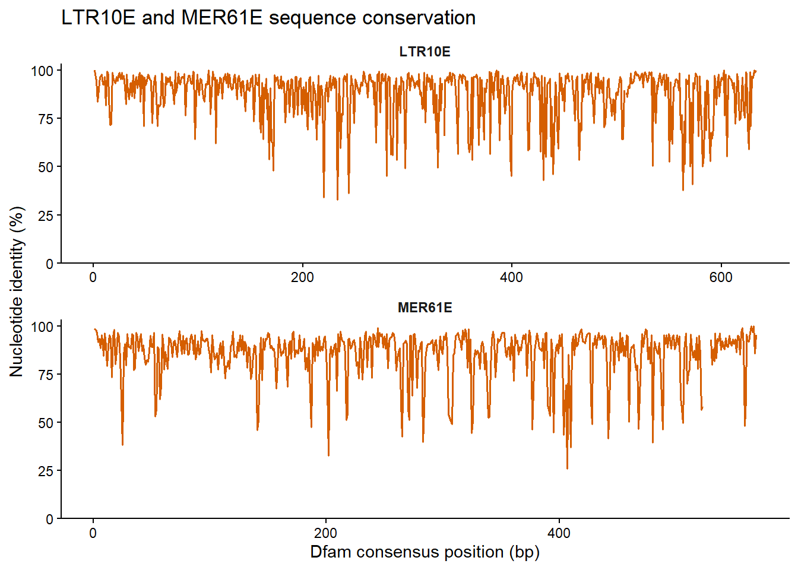
LTR10E_nucleotide_annotated <- LTR10E_nucleotide_table %>%
left_join(
LTR10E_anno %>%
dplyr::select(
TE_name,
cluster,
milliDiv
),
by = "TE_name"
)
TE_consensus_stats %>%
group_by(family) %>%
summarise(
mean_coverage = mean(coverage_percent),
median_coverage = median(coverage_percent),
mean_identity = mean(identity_percent, na.rm = TRUE),
median_identity = median(identity_percent, na.rm = TRUE)
)# A tibble: 2 × 5
family mean_coverage median_coverage mean_identity median_identity
<chr> <dbl> <dbl> <dbl> <dbl>
1 LTR10E 65.3 69.0 87.8 93.2
2 MER61E 63.7 64.4 85.4 89.1
sessionInfo()R version 4.4.2 (2024-10-31 ucrt)
Platform: x86_64-w64-mingw32/x64
Running under: Windows 11 x64 (build 26200)
Matrix products: default
locale:
[1] LC_COLLATE=English_United States.utf8
[2] LC_CTYPE=English_United States.utf8
[3] LC_MONETARY=English_United States.utf8
[4] LC_NUMERIC=C
[5] LC_TIME=English_United States.utf8
time zone: America/Chicago
tzcode source: internal
attached base packages:
[1] grid stats4 stats graphics grDevices utils datasets
[8] methods base
other attached packages:
[1] ggnewscale_0.5.2 BSgenome.Hsapiens.UCSC.hg38_1.4.5
[3] BSgenome_1.74.0 BiocIO_1.16.0
[5] pwalign_1.2.0 Biostrings_2.74.1
[7] XVector_0.46.0 edgeR_4.4.2
[9] limma_3.62.2 GenomicFeatures_1.58.0
[11] readxl_1.5.0.1 MASS_7.3-66
[13] janitor_2.2.1 org.Hs.eg.db_3.20.0
[15] AnnotationDbi_1.68.0 Biobase_2.66.0
[17] circlize_0.4.18 ComplexHeatmap_2.22.0
[19] DT_0.34.0 ggrepel_0.9.8
[21] rtracklayer_1.66.0 genomation_1.38.0
[23] plyranges_1.26.0 GenomicRanges_1.58.0
[25] GenomeInfoDb_1.42.3 IRanges_2.40.1
[27] S4Vectors_0.44.0 BiocGenerics_0.52.0
[29] lubridate_1.9.5 forcats_1.0.1
[31] stringr_1.6.0 dplyr_1.2.1
[33] purrr_1.2.2 readr_2.2.0
[35] tidyr_1.3.2 tibble_3.3.1
[37] ggplot2_4.0.3 tidyverse_2.0.0
[39] workflowr_1.7.2
loaded via a namespace (and not attached):
[1] RColorBrewer_1.1-3 rstudioapi_0.19.0
[3] jsonlite_2.0.0 shape_1.4.6.1
[5] magrittr_2.0.5 farver_2.1.2
[7] rmarkdown_2.32 GlobalOptions_0.1.4
[9] fs_2.1.0 zlibbioc_1.52.0
[11] vctrs_0.7.3 memoise_2.0.1
[13] Rsamtools_2.22.0 RCurl_1.98-1.20
[15] htmltools_0.5.9 S4Arrays_1.6.0
[17] plotrix_3.8-14 curl_8.0.0
[19] cellranger_1.1.0 SparseArray_1.6.2
[21] sass_0.4.10 KernSmooth_2.23-27
[23] bslib_0.12.0 htmlwidgets_1.6.4
[25] plyr_1.8.9 impute_1.80.0
[27] cachem_1.1.0 GenomicAlignments_1.42.0
[29] whisker_0.4.1 lifecycle_1.0.5
[31] iterators_1.0.14 pkgconfig_2.0.3
[33] Matrix_1.7-6 R6_2.6.1
[35] fastmap_1.2.0 snakecase_0.11.1
[37] GenomeInfoDbData_1.2.13 MatrixGenerics_1.18.1
[39] clue_0.3-68 digest_0.6.39
[41] colorspace_2.1-3 rprojroot_2.1.1
[43] RSQLite_3.53.3 labeling_0.4.3
[45] timechange_0.4.0 httr_1.4.9
[47] abind_1.4-8 compiler_4.4.2
[49] bit64_4.8.6 withr_3.0.3
[51] doParallel_1.0.17 S7_0.2.2
[53] BiocParallel_1.40.2 DBI_1.3.0
[55] DelayedArray_0.32.0 rjson_0.2.23
[57] tools_4.4.2 otel_0.2.0
[59] httpuv_1.6.17 glue_1.8.1
[61] restfulr_0.0.17 callr_3.8.0
[63] promises_1.5.0 getPass_0.2-4
[65] gridBase_0.4-7 cluster_2.1.8.3
[67] reshape2_1.4.5 generics_0.1.4
[69] gtable_0.3.6 tzdb_0.5.0
[71] seqPattern_1.38.0 data.table_1.18.6.1
[73] hms_1.1.4 utf8_1.2.6
[75] foreach_1.5.2 pillar_1.11.1
[77] vroom_1.7.1 later_1.4.8
[79] lattice_0.23-1 bit_4.6.0
[81] tidyselect_1.2.1 locfit_1.5-9.12
[83] knitr_1.52 git2r_0.36.2
[85] SummarizedExperiment_1.36.0 xfun_0.61
[87] statmod_1.5.2 matrixStats_1.5.0
[89] stringi_1.8.9 UCSC.utils_1.2.0
[91] yaml_2.3.12 evaluate_1.0.5
[93] codetools_0.2-20 cli_3.6.6
[95] processx_3.9.0 jquerylib_0.1.4
[97] dichromat_2.0-1 Rcpp_1.1.2
[99] png_0.1-9 XML_3.99-0.24
[101] parallel_4.4.2 blob_1.3.0
[103] bitops_1.1-0 scales_1.4.0
[105] crayon_1.5.3 GetoptLong_1.1.1
[107] rlang_1.3.0 KEGGREST_1.46.0